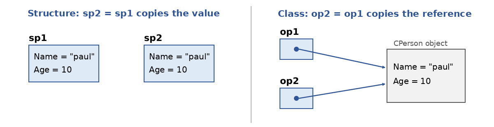

4. Klassen, structuren, interfaces
4.1. Objecten aan de hand van voorbeelden
4.1.1. Overzicht
We gaan nu objectgeoriënteerd programmeren verkennen aan de hand van voorbeelden. Een object is een entiteit die gegevens bevat die zijn toestand bepalen (velden, attributen enzovoort genoemd) en functies (methoden genoemd). Een object wordt gemaakt op basis van een sjabloon, een klasse:
Op basis van de voorgaande klasse [C1] kunt u veel objecten maken, zoals [O1], [O2], … Ze hebben allemaal de velden [p1], [p2], … en de methoden [M3], [M4], … Ze hebben echter verschillende waarden voor hun velden [pi], zodat elk object zijn eigen unieke toestand heeft. Als [o1] een object van het type [C1] is, verwijst [o1.p1] naar het veld [p1] van [o1] en verwijst [o1.M3] naar de methode [M3] van [o1].
Laten we uitgaan van een eerste objectmodel: de klasse [Person].
4.1.2. Het C#-project maken
In de voorbeelden uit het vorige hoofdstuk paste een programma in één enkel bronbestand. Vanaf nu kan een programma uit meerdere bronbestanden bestaan: één klasse per bestand, plus het hoofdprogramma. Deze bestanden worden gegroepeerd in een project. In de cursus van 2008 werden projecten gemaakt met de wizards van Visual Studio 2008; hier gebruiken we het opdrachtregelprogramma [dotnet], dat onder Windows, Linux en macOS op dezelfde manier werkt. In Hoofdstuk 2 is getoond hoe u hetzelfde project opent in VS Code of Visual Studio.
Ga in een terminal naar de map [04-classes] en maak een consoleproject met de naam [Persons]:
Het commando maakt een map met de naam [Persons] die twee bestanden bevat. Het bestand [Persons.csproj] beschrijft het project:
- Regel 4: het project levert een uitvoerbaar bestand op;
- regel 5: het doelprogramma is .NET 10;
- regel 6: een reeks gangbare namespaces ([System], [System.IO], [System.Collections.Generic], [System.Linq], …) wordt impliciet geïmporteerd in alle bronbestanden van het project. Daarom kunnen we
*[Console.WriteLine]schrijven zonder de clausule***[using System;]** ; - Regel 7: nullable referentietypen zijn ingeschakeld. De compiler geeft een waarschuwing voor elke variabele van een referentietype (een tekenreeks, een object) die de waarde [null] kan aannemen zonder dat het programma daarmee rekening houdt. Hier komen we terug in de paragraaf over deze typen; houd voorlopig in gedachten dat onze programma's zonder waarschuwingen moeten compileren.
Het tweede bestand, [Program.cs], bevat het hoofdprogramma. Alle [*.cs]-bestanden in de projectmap (en de submappen daarvan) maken deel uit van het project: om een klasse [Person] toe te voegen, maakt u eenvoudig het bestand [Person.cs] aan in de map [Persons]. Om het project uit te voeren, typt u [dotnet run] in de map ervan: het commando compileert het project, als het is gewijzigd, en voert het vervolgens uit.
Alle projecten in dit hoofdstuk zijn gegroepeerd in een solution, een bestand dat naar een reeks projecten verwijst en dat VS Code of Visual Studio in één keer kan openen. Het formaat [.slnx] (XML), dat sinds .NET 9 door het commando [dotnet] wordt ondersteund en sinds .NET 10 het standaardformaat is, vervangt het oude formaat [.sln]:
Het commando [dotnet build 04-classes.slnx] compileert vervolgens alle projecten van de solution.
4.1.3. Definitie van de klasse Person
De definitie van de klasse [Person] in het bronbestand [Person.cs] is als volgt:
- Regel 1: de klasse behoort tot de namespace [Persons] (de projectnaam). Deze vorm, [namespace Persons;], die „bestandsbereik” (file scope) heet, plaatst alle typen in het bestand binnen de namespace. Namespaces komen aan het einde van het hoofdstuk aan bod;
- Regels 6-8: de drie velden van de klasse. De twee tekenreeksen worden geïnitialiseerd met de lege tekenreeks; anders zouden ze bij het maken van het object de waarde [null] krijgen en zou de compiler, waarin nullable typen zijn ingeschakeld, een waarschuwing geven;
- regels 11-15: een methode die de toestand van het object instelt;
- regels 19-21: een methode die de toestand van het object weergeeft.
Hier hebben we de definitie van een klasse, en dus van een gegevenstype. Wanneer we variabelen van dit type maken, noemen we ze objecten of instanties van de klasse. Een klasse is dus een sjabloon waaruit objecten worden opgebouwd.
De leden van een klasse kunnen gegevens (velden), methoden (functies) of eigenschappen zijn. Eigenschappen zijn speciale methoden waarmee de waarde van de velden van een object wordt opgevraagd of ingesteld. Deze leden kunnen vergezeld gaan van een van de volgende sleutelwoorden:
Sleutelwoord | Toegang |
[private] | Een private lid is alleen toegankelijk voor de interne methoden van de klasse. Dit is het standaardtoegangsniveau |
[public] | Een publiek lid is toegankelijk voor elke methode, ongeacht of die binnen de klasse is gedefinieerd |
[protected] | Een protected lid is alleen toegankelijk via de interne methoden van de klasse of van een afgeleide klasse (zie het begrip overerving hieronder) |
[internal] | Een internal lid is toegankelijk voor elke methode binnen dezelfde assembly (hetzelfde project) |
In het algemeen worden de gegevens van een klasse private gedeclareerd, terwijl de methoden en eigenschappen public worden gedeclareerd. Dit betekent dat de gebruiker van een object (de programmeur):
- geen directe toegang heeft tot de private gegevens van het object;
- de publieke methoden van het object kan aanroepen, waaronder die welke toegang geven tot de private gegevens.
De syntaxis voor het declareren van een klasse [C] is als volgt:
De volgorde waarin de leden [private], [protected] en [public] worden gedeclareerd, is willekeurig.
4.1.4. De methode Initialize
Wat is het nut van de methode [Initialize]? Omdat [lastName], [firstName] en [age] private leden van de klasse [Person] zijn, zijn de instructies:
ongeldig. We moeten een object van het type [Person] initialiseren met een publieke methode. Daarvoor dient de methode [Initialize]. We schrijven:
De notatie [p1.Initialize] is geldig omdat [Initialize] publiek toegankelijk is.
4.1.5. De operator new
De voorgaande reeks instructies is echter onjuist. De instructie
declareert [p1] als een referentie naar een object van het type [Person]. Dit object bestaat nog niet en daarom is [p1] niet geïnitialiseerd. Wanneer we vervolgens [p1.Initialize("Jean", "Dupont", 30)] schrijven, roepen we de methode [Initialize] aan van het object waarnaar [p1] verwijst. Dit object bestaat echter niet en de compiler meldt de fout: de lokale variabele [p1] heeft geen waarde toegewezen gekregen. Als we schrijven:
geven we met het sleutelwoord [null] expliciet aan dat de variabele [p1] nog naar geen enkel object verwijst (het vraagteken in [Person?] geeft aan dat de variabele de waarde [null] mag krijgen). De compiler geeft dan slechts een waarschuwing (dereferentie van een null-verwijzing), en tijdens de uitvoering veroorzaakt de methodeaanroep een uitzondering van het type [NullReferenceException]. Opdat [p1] naar een object verwijst, moet u schrijven:
Hiermee wordt een object van het type [Person] gemaakt dat nog niet is geïnitialiseerd: de velden hebben hun standaardwaarden, hier de lege tekenreeks voor [lastName] en [firstName], en 0 voor [age] (een numeriek veld zonder expliciete beginwaarde is 0; een veld van een verwijzingstype is [null]). Nu [p1] naar een object verwijst, is de initialisatie-instructie voor dat object, [p1.Initialize("Jean", "Dupont", 30)], geldig.
4.1.6. Het sleutelwoord this
Laten we de code van de methode [Initialize] bekijken:
De instructie [this.firstName = p] betekent dat aan het veld [firstName] van het huidige object ([this]) de waarde [p] wordt toegekend. Het sleutelwoord [this] verwijst naar het huidige object, dat wil zeggen het object waarop de methode wordt uitgevoerd. Hoe weten we dat? Laten we bekijken hoe het object waarnaar [p1] verwijst, in het aanroepende programma wordt geïnitialiseerd:
Het is de methode [Initialize] van het object [p1] die wordt aangeroepen. Wanneer binnen deze methode naar het object [this] wordt verwezen, gaat het in feite om het object [p1]. De methode [Initialize] had ook als volgt kunnen worden geschreven:
Wanneer een methode van een object verwijst naar een veld [A] van dat object, wordt de notatie [this.A] impliciet aangenomen. Ze moet expliciet worden gebruikt bij een conflict tussen identifiers. Dat is het geval bij de instructie [this.age = age;], waarin [age] zowel verwijst naar een veld van het huidige object als naar de parameter [age] die de methode ontvangt. In dat geval moet de dubbelzinnigheid worden opgelost door het veld [age] aan te duiden als [this.age].
4.1.7. Een testprogramma
Hier volgt een kort testprogramma. Het staat in het bronbestand [Program.cs] van het project:
- Regel 1: Het hoofdprogramma is geschreven met top-level-instructies die niet tot een naamruimte behoren. Om de klasse [Person] alleen met haar naam aan te duiden, moet u haar naamruimte [Persons] importeren met de clausule [using];
- Regel 4: Aanmaken van een object van het type [Person] waarnaar [p1] verwijst;
- Regel 5: Het object initialiseren;
- Regel 6: De toestand ervan weergeven.
Resultaten:
4.1.8. Toepassingen met één bestand
Voor een kort voorbeeld is een project onnodig omslachtig. Sinds versie 10 kan een zelfstandig bronbestand rechtstreeks door .NET worden uitgevoerd, zonder [.csproj]-bestand: dit is een toepassing met één bestand, die we in het vorige hoofdstuk hebben gebruikt. De projectopties (nullable typen ingeschakeld, impliciete [using]) zijn dezelfde als die van een consoleproject. We gebruiken dit formaat telkens wanneer het voorbeeld slechts een of twee klassen bevat.
Het bestand bevat dan de top-level-instructies, gevolgd door de klassedeclaraties: de compiler dwingt deze volgorde af, omdat de top-level-instructies vóór alle typedeclaraties (klasse, structuur, interface enzovoort) in het bestand moeten staan. Op deze manier gedeclareerde klassen behoren niet tot een naamruimte, wat in een programma met één bestand niet uitmaakt.
4.1.9. Een andere methode: overlading
We gaan verder met de klasse *[Person] en voegen er een tweede methode, *[Initialize], aan toe. Het programma *[classes-01.cs]* ziet er als volgt uit:
- regels 2-7: de top-level-instructies, dat wil zeggen het hoofdprogramma;
- Regel 10: De klasse [Person] wordt na de top-level-instructies gedeclareerd;
- regels 18-22: de methode [Initialize] uit de vorige paragraaf;
- regels 26-30: een tweede methode, [Initialize].
We hebben nu twee methoden met de naam [Initialize]: dat is toegestaan zolang ze verschillende parameters accepteren (in aantal of type). De methode [Initialize] heet overladen. De compiler kiest op basis van de feitelijke parameters welke methode wordt aangeroepen: [p1.Initialize("Jean", "Dupont", 30)] (regel 3) roept de eerste aan, en [p2.Initialize(p1)] (regel 6) roept de tweede aan.
De parameter van de tweede methode is een verwijzing ([p]) naar een persoon. De velden van die persoon ([p]) worden vervolgens toegekend aan het huidige object ([this]). Merk op dat de methode [Initialize] rechtstreeks toegang heeft tot de velden van het object [p] hoewel ze privé zijn (regels 28-30). Dit geldt altijd: een methode van een klasse [C] heeft toegang tot de privéleden van alle objecten van dezelfde klasse [C].
Resultaten:
4.1.10. Constructors van de klasse Person
Een constructor is een methode die de naam van de klasse draagt en wordt aangeroepen wanneer het object wordt gemaakt. Ze wordt over het algemeen gebruikt om het object te initialiseren. Het is een methode die parameters kan accepteren maar geen waarde teruggeeft. Haar declaratie wordt door geen enkel type voorafgegaan (ook niet door [void]).
Als een klasse [C] een constructor heeft die n parameters accepteert, kunnen de declaratie en de initialisatie van een object van deze klasse als volgt gebeuren:
of
Wanneer een klasse [C] een of meer constructors heeft, moet een van die constructors worden gebruikt om een object van die klasse te maken. Als een klasse [C] geen constructors heeft, heeft ze een standaardconstructor, namelijk de parameterloze constructor [public C()]. De velden van het object behouden dan hun beginwaarden. Dat gebeurde in de vorige programma's, waar we [new Person()] hadden geschreven.
Het programma [classes-02.cs] biedt drie constructors voor de klasse [Person]:
- regels 17-21: de „hoofdconstructor" initialiseert de drie velden. Omdat de parameters dezelfde namen hebben als de velden, worden de velden onderscheiden met [this];
- regel 25: de kopieerconstructor. De notatie [: this(p.firstName, p.lastName, p.age)] betekent dat vóór de uitvoering van de (lege) body van de constructor de constructor van dezelfde klasse die drie parameters accepteert, namelijk [string], [string], [int], wordt uitgevoerd. Dit wordt aangeduid als het koppelen van constructors. De initialisatiecode wordt zo maar één keer geschreven;
- regel 30: de parameterloze constructor, die eveneens aan de hoofdconstructor is gekoppeld. Omdat de klasse constructors heeft gedeclareerd, heeft ze geen standaardconstructor meer: als we [new Person()] willen kunnen schrijven, moeten we die declareren;
- Regels 11-14: De twee tekenreeksen worden niet langer bij de declaratie geïnitialiseerd. Dat is niet meer nodig: alle constructors kennen er, rechtstreeks of via koppeling, een waarde aan toe, en de compiler controleert dit.
In de cursus van 2008 riepen de constructors de methode [Initialize] aan. Koppelen met [this(...)] verdient de voorkeur: met nullable typen ingeschakeld inspecteert de compiler de inhoud van methoden die door een constructor worden aangeroepen niet en zou hij melden dat de velden [firstName] en [lastName] aan het einde van de constructie de waarde [null] kunnen hebben.
Resultaten:
4.1.11. Objectverwijzingen
We gebruiken de klasse [Person] uit het vorige programma, waarbij we de parameterloze constructor weglaten maar de methode [Initialize(string, string, int)] uit het begin van het hoofdstuk opnemen. Het testprogramma wordt het volgende [classes-03.cs] (we geven de klasse niet opnieuw weer):
Resultaten:
Wanneer de variabele [p1] wordt gedeclareerd als [Person p1 = new Person("Jean", "Dupont", 30);] (regel 3), verwijst [p1] naar het object [Person("Jean", "Dupont", 30)] maar is ze niet het object zelf. In C zou dit een pointer worden genoemd, dat wil zeggen het adres van het gemaakte object. Als we vervolgens [p1 = null;] schrijven, wordt niet het object [Person("Jean", "Dupont", 30)] gewijzigd, maar verandert de verwijzing [p1] van waarde. Het object raakt „verloren" als geen enkele andere variabele ernaar verwijst: de geheugenruimte die het inneemt, wordt later teruggewonnen door de garbage collector van .NET.
Wanneer we [Person p2 = p1;] (regel 6) schrijven, initialiseren we de verwijzing [p2]: ze „wijst" naar hetzelfde object (ze verwijst naar hetzelfde object) als de verwijzing [p1]. Als het object waarnaar [p1] „wijst" (of verwijst) wordt gewijzigd, wordt dus ook het object gewijzigd waarnaar [p2] verwijst (regels 5-6 van de resultaten).
Wanneer [Person p3 = new Person(p1);] wordt geschreven (regel 9), wordt een nieuw object van het type [Person] gemaakt. Dit nieuwe object wordt aangeduid door [p3]. Als het object waarnaar [p1] verwijst wordt gewijzigd, blijft het object waarnaar [p3] verwijst (regel 7) ongewijzigd.
Ten slotte geeft de operator [==], toegepast op twee objectverwijzingen, op regel 19 aan of ze naar hetzelfde object verwijzen: [p1] en [p2] verwijzen naar hetzelfde object, terwijl [p1] en [p3] naar twee verschillende objecten verwijzen, hoewel ze dezelfde inhoud hebben (regel 8).
4.1.12. Objectverwijzingen als parameters doorgeven
In het vorige hoofdstuk hebben we onderzocht hoe functieparameters worden doorgegeven wanneer het eenvoudige typen zijn ([int], [double], …). Laten we bekijken wat er gebeurt wanneer de parameter een objectverwijzing is. Hiervoor gebruiken we de klasse [StringBuilder] van .NET. Een object van het type [string] kan niet worden gewijzigd: een bewerking zoals [s.ToUpper()] geeft een nieuw [string]-object terug. Een object van het type [StringBuilder]daarentegen is een veranderlijke tekenreeks: de methode [Append] voegt tekens aan de tekenreeks toe zonder een nieuw object te maken.
Het programma [classes-04.cs] ziet er als volgt uit:
- regel 1: de klasse [StringBuilder] behoort tot de naamruimte [System.Text], die geen deel uitmaakt van de impliciet geïmporteerde naamruimten;
- regel 4: drie verwijzingen [sb0, sb1, sb2] naar objecten van het type [StringBuilder];
- regel 6: deze worden op verschillende manieren doorgegeven aan de functie [ChangeStringBuilder] : [sb0] en [sb1] op de standaardmanier, [sb2] met het sleutelwoord [ref], en een vierde verwijzing, [sb3], gedeclareerd in de aanroep zelf ([out StringBuilder sb3]), met het sleutelwoord [out];
- regels 10-17: een lokale functie met de formele parameters [sbf0, sbf1, sbf2, sbf3]. De verbanden tussen de formele parameters [sbfi] en de feitelijke parameters [sbi] zijn als volgt:
- [sbf0] en [sb0] zijn bij het starten van de functie twee afzonderlijke verwijzingen die naar hetzelfde object wijzen (verwijzingen worden by value doorgegeven);
- hetzelfde geldt voor [sbf1] en [sb1];
- [sbf2] en [sb2] zijn één en dezelfde verwijzing (sleutelwoord [ref]);
- [sbf3] en [sb3] zijn eveneens dezelfde verwijzing (sleutelwoord [out]), die de functie moet initialiseren.
Resultaten:
Toelichting:
- [sb0] en [sbf0] zijn twee afzonderlijke verwijzingen naar hetzelfde object. Dit object is gewijzigd via [sbf0] (regel 13). Deze wijziging is zichtbaar via [sb0] (regel 5);
- [sb1] en [sbf1] zijn twee afzonderlijke verwijzingen naar hetzelfde object. Aan [sbf1] wordt binnen de functie een nieuwe waarde toegekend, waardoor het nu naar een nieuw object wijst (regel 14). Dit verandert de waarde van [sb1], dat blijft wijzen naar het oorspronkelijke, ongewijzigde object;
- [sb2] en [sbf2] zijn dezelfde verwijzing. [sbf2] wijst nu naar een nieuw object (regel 15). Omdat [sbf2] en [sb2] één en dezelfde entiteit zijn, wijst [sb2] ook naar dit nieuwe object;
- vóór de functieaanroep had [sb3] geen waarde. Na de aanroep verwijst [sb3] naar het object dat door de functie is gemaakt (regel 16).
4.1.13. Tijdelijke objecten
In een expressie kunt u de constructor van een object expliciet aanroepen: het object wordt gemaakt, maar er is geen variabele om er later toegang toe te krijgen (bijvoorbeeld om het te wijzigen). Dit tijdelijke object wordt gemaakt om de expressie te evalueren en wordt daarna weggegooid. De geheugenruimte die het innam, wordt later automatisch teruggewonnen door de garbage collector, wiens taak het is de geheugenruimte terug te winnen die wordt ingenomen door objecten waarnaar de gegevens van het programma niet meer verwijzen.
Beschouw het volgende programma, [classes-05.cs], waarin de constructors van de klasse [Person] een bericht weergeven:
- Regel 2: Het object [Person("Jean", "Dupont", 30)] wordt gemaakt en vervolgens doorgegeven aan de kopieerconstructor, die een tweede object maakt; daarna wordt op dat object de methode [Identify] aangeroepen. Naar geen van beide objecten verwijst een variabele.
Resultaten:
De resultaten tonen het achtereenvolgens aanmaken van de twee tijdelijke objecten.
4.1.14. Methoden om privévelden te lezen en te schrijven
We voegen aan de klasse [Person] de methoden toe die nodig zijn om de toestand van de velden van de objecten te lezen of te wijzigen ([classes-06.cs]):
- regels 22-35: de leesmethoden, getters genoemd;
- regels 38-51: de schrijfmethoden, setters genoemd.
Resultaten:
Deze aanpak is typisch voor de taal Java. C# biedt een elegantere voorziening: eigenschappen.
4.1.15. Eigenschappen
Er is nog een andere manier om toegang te krijgen tot de velden van een klasse: door eigenschappen te maken. Hiermee kunnen we privévelden gebruiken alsof ze publiek zijn.
Een eigenschap maakt het mogelijk de waarde van een veld te lezen ([get]) of in te stellen ([set]). Een eigenschap wordt als volgt gedeclareerd:
waarbij [Type] over het algemeen het type is van het veld dat door de eigenschap wordt beheerd. Ze kan twee methoden hebben met de namen [get] en [set]. De methode [get] heeft gewoonlijk tot taak de waarde van het veld dat ze beheert terug te geven (ze kan iets anders teruggeven; niets belet dat). De methode [set] ontvangt een parameter met de naam [value], die ze normaal gesproken toekent aan het veld dat ze beheert. Ze kan van de gelegenheid gebruikmaken om de geldigheid van de ontvangen waarde te controleren en zo nodig een uitzondering te veroorzaken als de waarde ongeldig is.
Beschouw het programma [classes-07.cs], waarin de vorige accessors en mutators zijn vervangen door lees-schrijfeigenschappen:
De methoden [set] van de drie eigenschappen controleren de ontvangen waarde (regels 52-57, 66-71, 80-85).
- Regels 53-55: De methode [string.IsNullOrWhiteSpace] geeft [true] terug als de tekenreeks [null] is, leeg is of uitsluitend uit spaties bestaat. De veroorzaakte uitzondering is van het type [ArgumentException], de uitzondering die .NET definieert om een ongeldige parameter aan te geven. De versie van 2008 veroorzaakte een uitzondering van het algemene type [Exception], waardoor de aanroeper alle uitzonderingen moet opvangen;
- regels 34-39: de constructor initialiseert het object via eigenschappen in plaats van via velden. Zo kan ze profiteren van de controles die de methoden [set] uitvoeren, die op slechts één plaats zijn geïmplementeerd.
Hoe worden de methoden [get] en [set] aangeroepen? In de instructie op regel 3 probeert het programma de waarden van de eigenschappen [FirstName], [LastName] en [Age] van de persoon [p] op te halen. De methode [get] van die eigenschappen wordt dan aangeroepen en geeft de waarde van het veld terug dat ze beheren. In de instructie [p.Age = 56;] (regel 4) willen we de waarde van de eigenschap [Age] instellen. De methode [set] van deze eigenschap wordt dan aangeroepen. Ze ontvangt 56 als haar parameter [value].
Een eigenschap [P] van een klasse [C] die alleen de methode [get] definieert, heet alleen-lezen. Als [c] een object van de klasse [C] is, wordt de bewerking [c.P = value] door de compiler geweigerd.
Resultaten:
Regel 4 van de resultaten laat zien dat de toekenning [p.Age = -4] (regel 8) is geweigerd door de methode [set] van de eigenschap [Age].
4.1.16. Object-initializers
Eigenschappen kunnen samen met een constructor worden gebruikt met de volgende syntaxis:
Deze syntaxis, bekend als een object-initializer, is gelijkwaardig aan de volgende code:
De volgorde van de eigenschappen is niet van belang. In het vorige programma [classes-07.cs]heeft de klasse [Person] een parameterloze constructor die niets initialiseert. Laten we terugkeren naar het einde van het hoofdprogramma:
Regel 15: De parameterloze constructor wordt gebruikt om een persoon te maken, die vervolgens via zijn eigenschappen wordt geïnitialiseerd. We hadden [new Person() { Age = 7, ... }] kunnen schrijven, maar haakjes zijn bij de parameterloze constructor in deze syntaxis niet verplicht. De methoden [set] worden inderdaad aangeroepen: op regel 19 wordt de naam met een spatie geweigerd (regel 6 van de resultaten).
4.1.17. Automatische eigenschappen
In veel gevallen lezen en schrijven de methoden [get] en [set] van een eigenschap eenvoudigweg een privéveld zonder verdere verwerking. In dergelijke gevallen kunt u een automatische eigenschap als volgt declareren:
Het privéveld dat bij de eigenschap hoort, wordt niet gedeclareerd; het wordt automatisch door de compiler gegenereerd en is alleen toegankelijk via de eigenschap. In plaats van het veld [firstName] en de eigenschap [FirstName] voor het programma [classes-07.cs]te schrijven, kunt u dus schrijven:
zonder het privéveld [firstName] te declareren. De expressie [= ""] na de eigenschap is de beginwaarde van het verborgen veld. Het verschil tussen de twee eigenschappen is dat de eerste de voornaam controleert in [set], terwijl de tweede geen enkele controle uitvoert.
Is het gebruik van de automatische eigenschap [FirstName] gelijkwaardig aan het declareren van een publiek veld [public string FirstName;]? Voor de gebruiker van de klasse is de syntaxis hetzelfde. Het is echter niet raadzaam een veld van een klasse publiek te declareren: dat is in strijd met het principe van inkapseling van de toestand van een object, die privé hoort te zijn en via publieke methoden beschikbaar wordt gesteld. Bij een automatische eigenschap kunnen later controles worden toegevoegd in [set] zonder de code van de gebruikers van de klasse te wijzigen.
Automatische eigenschappen kennen verschillende varianten, zoals het programma [classes-08.cs]laat zien:
- regel 29: een automatische lees-schrijfeigenschap met een beginwaarde;
- regel 31: een automatische alleen-lezeneigenschap: ze heeft geen [set] en kan alleen door een constructor worden ingesteld (regel 24);
- regel 33: de methode [set] mag een beperktere toegang hebben dan de eigenschap: hier is de eigenschap [Age] voor iedereen leesbaar, maar kan ze alleen worden gewijzigd door de methoden van de klasse, zoals [GrowOlder] (regel 40);
- regel 35: een eigenschap van het type [init] (C# 9): ze kan worden ingesteld door een constructor of een object-initializer (regel 2), maar daarna niet meer. Zo maakt u onveranderlijke objecten en profiteert u tegelijk van de syntaxis van object-initializers;
- regel 37: een alleen-lezeneigenschap waarvan de waarde wordt berekend. De notatie [=> expression] is een verkorte vorm van [get { return expression; }]. Ze is ook van toepassing op methoden (regel 40): dit heten expression-bodied leden;
- regel 46: een verplichte eigenschap (C# 11): het sleutelwoord [required] verplicht de code die een object van het type [Contact] maakt, om de eigenschap [Email] te initialiseren in een object-initializer (regel 15). De compiler weigert regel 17 als de commentaartekens ervan worden verwijderd;
- regels 10-12: drie instructies die de compiler weigert, om de redenen die in de commentaren worden genoemd.
Bedenk dat bij het sleutelwoord [var] (regel 2) het type van de variabele wordt afgeleid uit de expressie die haar initialiseert, in dit geval [Person].
Resultaten:
Ten slotte kan een automatische eigenschap virtueel worden gedeclareerd ([public virtual string Prop { get; set; }]) en in een afgeleide klasse worden overschreven, bijvoorbeeld om een controle toe te voegen in [set]. De sleutelwoorden [virtual] en [override] worden bij overerving geïntroduceerd.
4.1.18. Het sleutelwoord field (C# 14)
Tussen de automatische eigenschap, die geen enkele controle uitvoert, en de volledige eigenschap in het programma [classes-07.cs], waarvoor een veld moet worden gedeclareerd, biedt C# 14 een tussenoplossing: in de accessors van een eigenschap verwijst het sleutelwoord [field] naar het veld dat door de compiler is gemaakt. Zo kunt u een controle schrijven zonder een veld te declareren:
- Regels 26-31: De eigenschap [FirstName]. De methode [get] is automatisch ([get;]): ze geeft de waarde van het verborgen veld terug. De methode [set] controleert de ontvangen waarde en kent die, zonder voorloop- en volgspaties, toe aan het verborgen veld dat met [field] wordt aangeduid. De expressie [condition ? throw ... : value] maakt gebruik van een throw-expressie: als de voorwaarde waar is, wordt een uitzondering veroorzaakt; anders levert de expressie [value.Trim()] op;
- regel 32: de beginwaarde van het verborgen veld;
- regels 42-51: een [set] die is geschreven met een blok instructies.
Resultaten:
De voornaam „jean", die tussen spaties werd opgegeven (regel 2 van het programma), is zonder die spaties opgeslagen (regel 2 van de resultaten).
4.1.19. Klassemethoden en -attributen
Stel dat we het aantal [Person]-objecten willen tellen dat in een applicatie wordt gemaakt. We zouden zelf een teller kunnen bijhouden, maar dan lopen we het risico tijdelijke objecten te vergeten die hier en daar worden gemaakt. Het lijkt veiliger om in de constructors van de klasse [Person] een instructie op te nemen die een teller ophoogt. Deze teller kan geen gewoon veld zijn, aangezien elk object zijn eigen velden heeft: het is een veld van de klasse zelf, niet van een bepaalde instantie van die klasse. We declareren het met het sleutelwoord [static]:
Om ernaar te verwijzen, schrijven we [Person.nbPersons] om aan te geven dat het een veld van de klasse [Person] zelf is. Hier hebben we een privéveld gemaakt waartoe van buiten de klasse geen rechtstreekse toegang bestaat. We maken daarom een publieke eigenschap die toegang geeft tot het klasseveld [nbPersons]. Om de waarde van [nbPersons] terug te geven, heeft de methode [get] van deze eigenschap geen specifiek [Person]-object nodig: we hebben dus ook een eigenschap nodig die als [static] is gedeclareerd en van buitenaf wordt aangeroepen met de syntaxis [Person.NbPersons]. Hier volgt een voorbeeld van [classes-10.cs]:
- regel 14: het klasseveld. Zoals elk numeriek veld wordt het geïnitialiseerd op 0;
- regels 17-19: de alleen-lezenklasse-eigenschap. Ze had eenvoudiger kunnen worden geschreven als [public static long NbPersons { get; private set; }];
- regels 23-25: een klassemethode. Ze wordt aangeroepen met de klassenaam: [Person.Unknown()] (regel 7). Een klassemethode heeft geen huidig object: het sleutelwoord [this] heeft hier geen betekenis, en ze heeft alleen rechtstreeks toegang tot de [static]-klasseleden;
- Regel 39: De hoofdconstructor verhoogt de teller. De kopieerconstructor, die aan de hoofdconstructor is gekoppeld, verhoogt hem dus ook.
Resultaten:
Het programma heeft het tijdelijke object dat op regel 4 is gemaakt correct meegeteld. We gebruiken klasseleden al vanaf het begin: [Console.WriteLine], [int.Parse] en [Math.Sqrt] zijn methoden van het type [static]. [Console] en [Math] zijn zelfs statische klassen ([static class]): ze bevatten alleen leden van het type [static], en er kunnen geen instanties van worden gemaakt.
4.1.20. Een array van personen
Een object is een gegeven zoals elk ander, en als zodanig kunnen meerdere objecten worden gegroepeerd in een array [classes-11.cs]:
- Regel 2: maakt een array van 3 elementen van het type [Person]. Deze 3 elementen worden hier geïnitialiseerd met de waarde [null], wat betekent dat ze naar geen enkel object verwijzen. Strikt genomen spreken we van een „array van objecten", ook al is het slechts een array van objectverwijzingen. Het maken van de array, die zelf een object is (zoals [new] aangeeft), maakt geen objecten van hetzelfde type als haar elementen; dat moet daarna gebeuren. Merk op dat de compiler er niet op wijst dat de elementen van een array van het type [Person[]] direct na het maken ervan gelijk zijn aan [null] : dat is een beperking van de analyse van nullable typen;
- Regels 3-5: Maak 3 objecten van het type [Person];
- regels 7-9: geef de inhoud van de tabel [friends] weer.
De klasse [Person], hieronder gedeclareerd, is afgeleid van het programma [classes-03.cs], teruggebracht tot haar constructor met drie parameters en haar methode [Identify]. Resultaten:
4.1.21. new()-expressies met een doeltype
Wanneer het type van het te maken object uit de context bekend is, staat C# 9 toe de klassenaam na [new] weg te laten. Het programma [classes-12.cs] laat dit zien:
- Regel 3: Het type van het object dat door [new(...)] wordt gemaakt, is dat van de variabele die het ontvangt, [Person]. Deze syntaxis is het tegenovergestelde van [var]: bij [var] wordt het type van de variabele afgeleid uit de expressie; bij [new()] wordt het type van het object afgeleid uit de variabele;
- regel 4: [new()] met een object-initializer;
- regels 6-11: een array die is gemaakt en gevuld met een collectie-expressie (C# 12): de elementen staan tussen vierkante haken en worden door komma's gescheiden. Het type van de elementen, [Person], is bekend: [new(...)] volstaat om ze te maken;
- regel 18: het type van het gemaakte object is dat van de parameter van de functie [Display].
Resultaten:
4.2. Overerving aan de hand van een voorbeeld
4.2.1. Overzicht
Hier bespreken we het begrip overerving. Het doel van overerving is een bestaande klasse „aan te passen" zodat ze aan onze behoeften voldoet. Stel dat we een klasse met de naam [Teacher] willen maken: een docent is een specifiek soort persoon. Een docent heeft eigenschappen die andere personen niet hebben: bijvoorbeeld het vak dat hij geeft. Maar een docent heeft ook de eigenschappen die alle personen gemeen hebben: voornaam, achternaam en leeftijd. Een docent is dus een volwaardig lid van de klasse [Person] maar heeft extra attributen. In plaats van een klasse [Teacher] helemaal opnieuw te maken, bouwen we liever voort op de bestaande klasse [Person] en passen we die aan de specifieke kenmerken van docenten aan. Het begrip overerving stelt ons daartoe in staat.
Om aan te geven dat de klasse [Teacher] de eigenschappen van de klasse [Person] erft, schrijven we:
[Person] heet de ouderklasse (of basisklasse), en [Teacher] heet de afgeleide klasse (of kindklasse). Een [Teacher]-object heeft alle kenmerken van een [Person]-object: het heeft dezelfde velden en methoden. Deze velden en methoden van de ouderklasse worden niet herhaald in de definitie van de kindklasse; we geven alleen de velden en methoden op die de kindklasse toevoegt. Een C#-klasse kan van slechts één ouderklasse worden afgeleid.
De voorbeelden in deze paragraaf bestaan uit twee consoleprojecten, [Inheritance1] en [Inheritance2], uit de oplossing [04-classes.slnx]. In het project [Inheritance1] wordt de klasse [Person] als volgt gedefinieerd: [Person.cs]:
- regel 6: de personenteller uit de vorige paragraaf, ditmaal geschreven als een automatische klasse-eigenschap waarvan de definitie aan de klasse is voorbehouden;
- regels 9-15: de constructor initialiseert het object via zijn eigenschappen en geeft een voortgangsbericht weer;
- regels 19-34: drie eigenschappen die hun waarden controleren met behulp van het sleutelwoord [field]. De controles voor de voornaam en de achternaam, die identiek zijn, zijn ondergebracht in de private klassemethode [Check] (regels 41-47);
- regel 38: de methode [Identify] uit de vorige voorbeelden is vervangen door de alleen-lezeneigenschap [Identity], die de identiteit van de persoon teruggeeft in plaats van weer te geven.
We maken een klasse met de naam [Teacher] die erft van de klasse [Person]: [Teacher.cs]:
De klasse [Teacher] voegt het volgende toe aan de methoden en eigenschappen van de klasse [Person]:
- regel 3: de klasse [Teacher] is afgeleid van de klasse [Person];
- regel 16: een eigenschap [Section], het nummer van de sectie waartoe de docent binnen het lerarenkorps behoort (grofweg één sectie per vak);
- regels 6-12: een constructor waarmee alle eigenschappen van een docent worden geïnitialiseerd;
- regel 19: een nieuwe eigenschap, [Identity], waarop we later uitgebreider terugkomen.
4.2.2. Een Teacher-object maken
Een kindklasse erft de constructors van haar ouderklasse niet. Ze moet haar eigen constructors definiëren. De constructor van de klasse [Teacher] ziet er als volgt uit:
De declaratie op regels 6-7 geeft aan dat de constructor vier parameters heeft: [firstName], [lastName], [age], [section], en er drie van doorgeeft ([firstName], [lastName], [age]) aan zijn basisklasse, in dit geval de klasse [Person]. We weten dat deze klasse een constructor heeft, [Person(string, string, int)], waarmee we een persoon kunnen maken met de doorgegeven parameters. Zodra de constructie van het [Person]-deel is voltooid, gaat de constructie van het [Teacher]-object verder met de uitvoering van de body van de constructor (regel 10).
Merk op dat links van het =-teken de eigenschap [Section] wordt gebruikt. Als deze eigenschap geldigheidscontroles uitvoerde, zou de constructor daarvan profiteren. Zo hoeven die controles niet op twee verschillende plaatsen te worden opgenomen: in de constructor en in de eigenschap.
Samengevat doet de constructor van een afgeleide klasse het volgende:
- ze geeft aan haar basisklasse de parameters door die deze nodig heeft om zichzelf te construeren;
- ze gebruikt de overige parameters om haar eigen leden te initialiseren.
We hadden ook kunnen kiezen voor:
Dit is onmogelijk, om twee redenen. Ten eerste heeft de klasse *[Person] geen parameterloze constructor: bij ontbreken van ***[: base(...)]probeert de compiler die constructor aan te roepen en meldt hij een fout. Ten tweede: zelfs als de privévelden [firstName], [lastName] en [age] bestonden (hier zijn het de verborgen velden van de eigenschappen), hebben alleen objecten van de klasse [Person] er rechtstreeks toegang toe. Alle andere objecten, ook objecten van afgeleide klassen zoals hier, moeten er toegang toe krijgen via publieke (of beschermde) leden. Het zou anders zijn geweest als de klasse *[Person] deze velden als beschermd (*[protected]*) had gedeclareerd: afgeleide klassen zouden er dan rechtstreeks toegang toe hebben gehad. Het gebruik van de constructor van de ouderklasse is dus de juiste oplossing en de standaardaanpak: bij het construeren van een kindobject roept u eerst de constructor van het ouderobject aan en voltooit u daarna de initialisaties die specifiek zijn voor het kindobject ([Section]* in ons voorbeeld).
Als de klasse [Teacher] geen eigenschap [Identity] definieerde, zou de expressie [e.Identity], waarin [e] een docent is, verwijzen naar de eigenschap [Identity] die van de klasse [Person] is geërfd: ze is publiek en wordt door overerving een publieke eigenschap van de klasse [Teacher]. Dit zou dan de identiteit opleveren van het [Person]-deel van de docent, zonder zijn sectie.
4.2.3. Een eigenschap of methode verbergen: het sleutelwoord new
Om de volledige identiteit van een docent te verkrijgen, definieert de klasse [Teacher] haar eigen eigenschap [Identity]:
De eigenschap [Identity] van de klasse [Teacher] maakt gebruik van de eigenschap [Identity] van haar ouderklasse, aangeduid als [base.Identity], om het „Person"-deel te verkrijgen en vult dit vervolgens aan met de sectie, die specifiek is voor de klasse [Teacher].
Beschouw een docentobject [E]. Dit object bevat een [Person]-object:

De eigenschap [Identity] is zowel in de klasse [Teacher] als in haar ouderklasse [Person] gedefinieerd. In de kindklasse [Teacher] wordt de eigenschap [Identity] voorafgegaan door het sleutelwoord [new] om aan te geven dat er opzettelijk een nieuwe eigenschap, [Identity], wordt gedefinieerd voor de klasse [Teacher] (zonder [new] geeft de compiler een waarschuwing). De klasse [Teacher] heeft nu twee eigenschappen, [Identity]:
- een die is geërfd van de ouderklasse [Person];
- haar eigen eigenschap.
Als [E] een [Teacher]-object is, verwijst [E.Identity] naar de eigenschap [Identity] van de klasse [Teacher]. Men zegt dat de eigenschap [Identity] van de kindklasse maskeert (verbergt) de eigenschap [Identity] van de ouderklasse. Over het algemeen geldt: als [O] een object is en [M] een methode, zoekt de compiler om de methode [O.M] uit te voeren een methode [M] in de volgende volgorde:
- in de klasse van het object [O];
- in haar ouderklasse, als ze er een heeft;
- in de ouderklasse van haar ouderklasse, als die bestaat;
- enzovoort.
Overerving stelt de kindklasse dus in staat methoden en eigenschappen opnieuw te definiëren met dezelfde namen als die in de ouderklasse. Hierdoor kan de kindklasse aan haar eigen behoeften worden aangepast.
Het testprogramma [Program.cs] van het project [Inheritance1] ziet er als volgt uit:
- regel 4: maakt een docent;
- regel 6: geeft zijn identiteit weer, die van de klasse [Teacher];
- regel 8: de conversieoperator [(Person)] behandelt het object [e] als een [Person]: de eigenschap [Identity] van de klasse [Person] wordt dan gebruikt;
- regels 12-13: aanroep van de functie [Display] (regels 20-22) met een docent gevolgd door een persoon. We komen hier in de volgende paragraaf op terug;
- regels 15-16: aanroep van de methode [ToString] op beide objecten. Ook hierop komen we terug.
Resultaten:
We zien dat:
- er een [Person] -object (regel 2) is gemaakt vóór het object [Teacher] (regel 3);
- [e.Identity] de volledige identiteit van de docent opleverde (regel 4), en [((Person)e).Identity] de identiteit van zijn [Person]-deel opleverde (regel 5).
4.2.4. Polymorfisme
Beschouw een klassenhiërarchie: C0 ← C1 ← C2 ← … ← Cn, waarbij Ci ← Cj aangeeft dat klasse Cj is afgeleid van klasse Ci. Dit houdt in dat klasse Cj alle kenmerken van klasse Ci heeft plus extra kenmerken. Laat Oi objecten van het type Ci zijn. Het is geldig om [Oi = Oj] te schrijven met j > i. Door overerving heeft klasse Cj immers alle kenmerken van klasse Ci plus extra kenmerken. Een object Oj van het type Cj bevat dus een object van het type Ci. De bewerking [Oi = Oj] zorgt ervoor dat Oi een verwijzing is naar het object van het type Ci dat in het object Oj besloten ligt.
Het feit dat een variabele Oi van klasse Ci niet alleen naar een object van klasse Ci kan verwijzen maar naar elk object dat is afgeleid van klasse Ci, heet polymorfisme: het vermogen van een variabele om naar verschillende typen objecten te verwijzen.
Laten we een voorbeeld nemen en de functie [Display] uit het vorige programma bekijken:
We kunnen er een *[Person]* of een *[Teacher] aan doorgeven: in dat laatste geval ontvangt de formele parameter [p], die van het type [Person] is, een waarde van het type [Teacher]. Aangezien het type [Teacher] is afgeleid van het type [Person]*, is dit geldig.
De eigenschap [p.Identity] geeft een tekenreeks terug die het [Person]-object [p] identificeert. Wat gebeurt er als de parameter die aan de functie [Display] wordt doorgegeven een object van het type [Teacher] is? De vorige resultaten laten zien dat de instructie [p.Identity] telkens de eigenschap [Identity] van een [Person] uitvoerde, eerst van de persoon die in de docent [e] besloten ligt (regel 7), daarna van de persoon [p] zelf (regel 8). De functie paste zich niet aan het object aan dat daadwerkelijk als parameter aan [Display] werd doorgegeven. We hadden liever de volledige identiteit van de docent [e] gehad. Daarvoor had de notatie [p.Identity] moeten verwijzen naar de eigenschap [Identity] van het object waarnaar [p] daadwerkelijk wijst, in plaats van naar de eigenschap [Identity] van het „Person"-deel van dat object. Bij maskering ([new]) wordt de eigenschap tijdens het compileren gekozen, op basis van het gedeclareerde type van de variabele ([Person]).
4.2.5. Herdefinitie en polymorfisme: virtual en override
Het gewenste resultaat is te bereiken door [Identity] in de basisklasse [Person] te declareren als virtuele eigenschap ([virtual]). Dat is wat het project [Inheritance2] doet; de klasse [Person] daarvan is dezelfde als die in het project [Inheritance1], met twee wijzigingen:
- Regel 38: Het sleutelwoord [virtual] maakt van [Identity] een virtuele eigenschap. Dit sleutelwoord kan ook op methoden worden toegepast. Kindklassen die een virtuele eigenschap of methode overschrijven, moeten dan het sleutelwoord [override] gebruiken in plaats van [new] om hun overschreven eigenschap of methode te kwalificeren;
- regel 41: een herdefinitie van de methode [ToString], die in de volgende paragraaf wordt besproken.
In de klasse [Teacher] wordt de eigenschap [Identity] als volgt opnieuw gedefinieerd:
- Regel 18: De eigenschap [Identity] overschrijft die van de ouderklasse;
- Regel 4: De klasse is verzegeld ([sealed]), wat we later nader toelichten.
Bij een virtuele eigenschap of methode wordt de keuze welke eigenschap door [p.Identity] wordt uitgevoerd tijdens de uitvoering gemaakt, op basis van het daadwerkelijke type van het object waarnaar [p] verwijst. Het programma [Program.cs] van het project [Inheritance2] ziet er als volgt uit:
Resultaten:
Ditmaal gaf de functie [Display] op regel 4 de volledige naam van de docent correct weer.
4.2.6. De methode ToString
De klasse [object] (de C#-alias voor de klasse [System.Object]) is de „ouderklasse" van alle C#-klassen. Wanneer u dus schrijft:
schrijft u impliciet:
De klasse [object] definieert een virtuele methode, [ToString], die standaard de volledige klassenaam van het object teruggeeft. Dit is wat de laatste twee uitvoerregels van het project [Inheritance1] lieten zien, bij de aanroepen van [e.ToString()] en [p.ToString()]: [Inheritance1.Teacher] en [Inheritance1.Person]. Hoewel we de methode [ToString] in de klassen [Person] en [Teacher] niet hadden overschreven, kon de methode [ToString] van de klasse [object] de werkelijke klassenaam van het object weergeven.
In het project [Inheritance2] herdefinieert de klasse [Person] de methode [ToString] (zie hierboven):
Laten we terugkeren naar het programma [Program.cs] in het project [Inheritance2]:
Op regel 10 heeft de methode [WriteLine] van de klasse [Console] geen variant die een parameter van het type [Person] accepteert. Onder de verschillende varianten van [WriteLine] is er een die een parameter van het type [object] accepteert. De compiler gebruikt deze methode, [WriteLine(object o)], omdat deze signatuur betekent dat de parameter [o] van het type [object] of een afgeleid type kan zijn. Aangezien [object] de superklasse van alle klassen is, kan elk object als parameter aan [WriteLine] worden doorgegeven, ook een object van het type [Person] of [Teacher]. De methode [WriteLine(object o)] schrijft [o.ToString()] naar de console. Aangezien de methode [ToString] virtueel is, wordt de methode [ToString] van het daadwerkelijke object gebruikt, in dit geval die van de klasse [Person]. Deze methode geeft [Identity] terug, dat ook een virtuele eigenschap is: voor de docent [e] wordt dus de eigenschap [Identity] van de klasse [Teacher] gebruikt, zoals te zien is op regel 7 van de resultaten. Het is dus niet nodig [ToString] in de klasse [Teacher] te herdefiniëren, anders dan in de cursus van 2008.
Hetzelfde mechanisme geldt voor string-interpolatie: in [$"{person}"] (regel 16) wordt het object [person] door zijn methode [ToString] omgezet in een tekenreeks. De lus op regels 14-16 doorloopt een array van verwijzingen naar [Person], die in werkelijkheid naar objecten van verschillende typen wijzen: de methode [GetType] (die ook van [object] wordt geërfd) geeft het daadwerkelijke type van het object terug, waarvan de eigenschap [Name] de naam is.
4.2.7. Verzegelde klassen
De klasse [Teacher] in het project [Inheritance2] is gedeclareerd als [public sealed class Teacher : Person]. Het sleutelwoord [sealed] voorkomt dat er klassen worden afgeleid van de klasse [Teacher]: de declaratie [class TeacherResearcher : Teacher] zou door de compiler worden geweigerd. Een klasse wordt verzegeld wanneer ze niet bedoeld is om van af te leiden; de compiler en de runtime kunnen bovendien de aanroepen van haar virtuele methoden optimaliseren. Het sleutelwoord is ook van toepassing op een opnieuw gedefinieerde methode of eigenschap: [public sealed override string Identity] zou voorkomen dat afgeleide klassen haar opnieuw definiëren, zonder afleiding van de klasse te verbieden.
Omgekeerd kan een methode of eigenschap die niet als [virtual], [abstract] (zie hierna) of [override] is gedeclareerd, niet worden overschreven met [override]: in C# zijn methoden, anders dan in Java, niet standaard virtueel.
4.3. De betekenis van een operator voor een klasse opnieuw definiëren
4.3.1. Inleiding
Beschouw de expressie [op1 + op2], waarin [op1] en [op2] twee operanden zijn. Het is mogelijk de betekenis van de operator [+] opnieuw te definiëren. Als de operand [op1] een instantie van de klasse [C1] is, moet in de klasse [C1] een statische methode worden gedefinieerd met de volgende signatuur:
Wanneer de compiler de expressie [op1 + op2] tegenkomt, vertaalt hij die naar [C1.operator +(op1, op2)]. Het type dat door de methode [operator] wordt teruggegeven, is belangrijk. Beschouw immers de bewerking [op1 + op2 + op3]. Die wordt door de compiler vertaald als [(op1 + op2) + op3]. Laat [res12] het resultaat van [op1 + op2] zijn. De volgende bewerking is [res12 + op3]. Als [res12] van het type [C1] is, wordt ook die vertaald naar [C1.operator +(res12, op3)]. Zo kunnen bewerkingen aan elkaar worden geschakeld.
Ook unaire operatoren met slechts één operand kunnen opnieuw worden gedefinieerd. Als [op1] dus een object van het type [C1] is, kan de bewerking [op1++] worden herdefinieerd door een statische methode van de klasse [C1]:
Wat hier is gezegd, geldt voor de meeste operatoren, met enkele uitzonderingen:
- De operatoren [==] en [!=] moeten samen opnieuw worden gedefinieerd, evenals [<] en [>], [<=] en [>=];
- de operatoren [&&], [||], [=], [.], [?:], [??] en [new] kunnen niet opnieuw worden gedefinieerd;
- tot en met C# 13 konden de samengestelde toekenningsoperatoren ([+=], [-=], …) niet worden overschreven: [a += b] werd altijd gecompileerd naar [a = a + b]. C# 14 staat toe ze te overschrijven, zoals we zullen zien.
4.3.2. Een voorbeeld
Het project [Lists] in de oplossing definieert een klasse met de naam [ListOfPersons], die een lijst van personen is. De klassen [Person] en [Teacher] in dit project zijn dezelfde als die in het project [Inheritance2], maar zonder hun voortgangsberichten en de personenteller. In de cursus van 2008 was de klasse *[ListOfPersons] afgeleid van de klasse *[ArrayList]*, een lijst van objecten van het type *[object], die nu verouderd is. We gebruiken de generieke lijst [List<Person>] (generieke klassen komen later in dit hoofdstuk aan bod; de klasse [List<T>] wordt in het volgende hoofdstuk behandeld) en nemen die, in plaats van ervan te erven, op in een privéveld van de klasse. Dit heet het gebruik van compositie in plaats van overerving: de klasse [ListOfPersons] stelt zo alleen de bewerkingen beschikbaar die ze heeft gekozen. Van de klasse [List<Person>]gebruiken we alleen de volgende elementen:
- de methode [L.Add(p)], die de persoon [p] aan de lijst [L] toevoegt, en de methode [L.AddRange(L2)], die er alle elementen van de lijst [L2] aan toevoegt;
- de eigenschap [L.Count], die het aantal elementen van de lijst [L] teruggeeft;
- de notatie [L[i]], die verwijst naar element nr. i van de lijst [L].
De definitie van de klasse [ListOfPersons] is als volgt: [ListOfPersons.cs]:
- regel 6: de lijst van personen. Het sleutelwoord [readonly] geeft aan dat het veld alleen bij zijn declaratie of binnen een constructor een waarde mag krijgen: de inhoud van de lijst zelf kan veranderen, maar het veld verwijst altijd naar dezelfde lijst. [] is een lege collectie-expressie: het type van de gemaakte collectie, [List<Person>], wordt afgeleid uit het type van het veld;
- regel 9: het aantal personen, een alleen-lezeneigenschap;
- regels 12-17: definitie van de operator [+] voor de bewerking [l + p], waarin [l] van het type [ListOfPersons] is en [p] van het type [Person] of een afgeleid type. De operator maakt een nieuwe lijst (regel 14), kopieert de personen uit [l] daarin (regel 15) en voegt vervolgens de persoon [p] toe (regel 16). Net als bij de operator [+] voor getallen of tekenreeksen worden de operanden niet gewijzigd. Omdat de lijst [l] van dezelfde klasse is, heeft de operator toegang tot haar privéveld [l.persons]. De resulterende lijst is van het type [ListOfPersons], waardoor de operatoren [+] aan elkaar kunnen worden geschakeld, zoals in [l + p1 + p2], dat (operatorvoorrang) wordt geïnterpreteerd als [(l + p1) + p2];
- Regels 21-23: definitie van de operator [+=] (C# 14). In tegenstelling tot de andere operatoren is dit geen statische methode maar een instantiemethode zonder retourwaarde ([void]): ze wijzigt het huidige object, in dit geval door er de persoon [p] aan toe te voegen;
- regels 51-53: we definiëren de methode [ToString] opnieuw om een lijst van personen weer te geven in de vorm (persoon1, persoon2, ...), waarbij persooni zelf het resultaat is van de methode [ToString] van de persoon. De statische methode [string.Join(separator, elements)] voegt de tekstweergaven van de elementen samen en scheidt ze met het scheidingsteken. In de cursus van 2008 werd deze tekenreeks handmatig opgebouwd met een [StringBuilder]-object.
Merk op dat de klasse [ListOfPersons] geen constructor heeft. Ze gebruikt dus de standaardconstructor [public ListOfPersons()], die niets anders doet dan het veld [persons] initialiseren met de waarde die in zijn declaratie is opgegeven. Regels 26-46 worden in de volgende paragraaf besproken.
Het testprogramma [Program.cs] begint als volgt:
- regel 5: aanmaken van een lege lijst van personen [l];
- regel 7: voegt twee personen toe met de operator [+];
- regel 11: [l + p] maakt een nieuwe lijst [l2]; de lijst [l] blijft ongewijzigd;
- regel 18: voegt een docent toe met de operator [+=];
- Regels 9-13: Het samenvoegen van een tekenreeks en een object maakt gebruik van de methode [ToString], die is herdefinieerd in de klasse [ListOfPersons].
Resultaten:
4.3.3. Samengestelde toekenningsoperatoren (C# 14)
Waarom de operator [+=] definiëren terwijl [l = l + p] dezelfde uitvoer oplevert? Als de klasse [+=] niet definieert, vertaalt de compiler [l += p] naar [l = l + p]: er wordt een nieuwe lijst gemaakt, alle personen uit [l] worden daarin gekopieerd, vervolgens verwijst [l] naar deze nieuwe lijst en wordt de oude door de garbage collector weggegooid. Als de klasse de operator [+=] wel definieert, wordt de persoon aan de bestaande lijst toegevoegd zonder te worden gekopieerd. Regel 16 bewaart een tweede verwijzing, [l3], naar de lijst [l]; na de instructie [l += ...] wijzen beide verwijzingen nog steeds naar hetzelfde object (regel 6 van de resultaten), wat bewijst dat de lijst niet opnieuw is gemaakt. Bij een grote lijst, of in een lus, is het prestatieverschil aanzienlijk.
4.4. Een indexer voor een klasse definiëren
Hier blijven we de klasse [ListOfPersons] gebruiken. Als [l] een instantie van [ListOfPersons] is, willen we de notatie [l[i]] kunnen gebruiken om te verwijzen naar persoon nummer i in de lijst [l], zowel om te lezen ([Person p = l[i]]) als om te schrijven ([l[i] = new Person(...)]).
Om [l[i]], waarbij [l[i]] verwijst naar een [Person]-object, te kunnen schrijven, moeten we in de klasse [ListOfPersons] een speciale eigenschap met de naam [this] definiëren:
De eigenschap [this[int i]] heet een indexer omdat ze betekenis geeft aan de expressie [obj[i]], die lijkt op arraynotatie, terwijl [obj] geen array is maar een object. De methode [get] van de indexer van het object [obj] wordt aangeroepen wanneer [variable = obj[i]] wordt geschreven, en de methode [set] wordt aangeroepen wanneer [obj[i] = value] wordt geschreven.
- Regels 27-30: De positiegebaseerde indexer. De methode [get] geeft persoon nr. i uit de private lijst [persons], terug en de methode [set] kent er persoon [value] aan toe. In de cursus van 2008, waarin de klasse was afgeleid van [ArrayList], moest de indexer van de ouderklasse worden gemaskeerd met het sleutelwoord [new] en moest het element van het type [object] dat werd teruggegeven, worden geconverteerd naar [Person]. Met een generieke lijst is geen conversie meer nodig;
- regels 34-46: we willen ook [int i = l["lastName"]] kunnen schrijven, dat wil zeggen de lijst [l] indexeren niet met een elementnummer maar met de naam van een persoon. Het resultaat van [l[lastName]] is een geheel getal: de positie in de lijst van de persoon met de naam [lastName], of -1 als die persoon niet in de lijst staat. Alleen de methode [get] is gedefinieerd, waardoor de syntaxis [l["lastName"] = value] wordt voorkomen, waarvoor een methode [set] had moeten worden gedefinieerd. Een klasse kan meerdere indexers hebben, mits hun parameters verschillen.
Het testprogramma gaat als volgt verder:
- regel 25: aanroep van de methode [set] van de indexer [this[int]];
- regel 27: aanroep van zijn methode [get];
- Regel 34: Aanroep van de indexer [this[string]];
- regel 37: aanroep van de indexer [this[int]].
Resultaten:
4.5. Structuren
4.5.1. Waarde en verwijzing
De C#-structuur is vergelijkbaar met de structuur in de taal C en lijkt sterk op het begrip klasse. Een structuur wordt als volgt gedefinieerd:
Ondanks overeenkomsten in hun declaraties zijn er aanzienlijke verschillen tussen klassen en structuren. Zo bestaat het begrip overerving niet bij structuren (een structuur kan wel interfaces implementeren, die later aan bod komen). Als we een klasse schrijven waarvan niet bedoeld is dat er van wordt afgeleid, welke verschillen tussen een structuur en een klasse helpen ons dan te kiezen? Laten we dat onderzoeken aan de hand van het volgende voorbeeld: [classes-13.cs]:
- regels 33-36: een structuur met twee publieke velden: [Name], [Age];
- regels 40-43: een klasse met twee publieke velden: [Name], [Age]. Publieke velden, die over het algemeen worden afgeraden, maken dit voorbeeld leesbaarder.
Resultaten:
Deze structuur heeft hier geen constructor. Ze zou er een kunnen hebben, zoals we later zullen laten zien. Standaard heeft ze altijd een parameterloze constructor, in dit geval [SPerson()], die al haar velden op nul zet ([null] voor verwijzingen).
De declaratie op regel 3 maakt een structuur ([Name], [Age]), en de waarde van [sp1] is deze structuur zelf. De velden ervan hebben nog geen waarden: de compiler eist dat ze allemaal een waarde krijgen (regels 4-5) voordat de structuur wordt gebruikt (regel 6). Bij een klasse moet het object ([Name], [Age]) expliciet worden gemaakt met de operator [new] (regel 18). De instructie maakt een [CPerson]-object (ongeveer gelijkwaardig aan onze structuur), en de waarde van [op1] is dan het adres (de verwijzing) van dat object.
Samengevat:
- bij de structuur is de waarde van [sp1] de structuur zelf;
- bij de klasse is de waarde van [op1] het adres van het gemaakte object.

Wanneer [SPerson sp2 = sp1;] in het programma wordt geschreven (regel 8), wordt een nieuwe structuur [sp2] ([Name], [Age]) gemaakt en geïnitialiseerd met de waarde van [sp1], de structuur zelf:

De structuur van [sp1] wordt gedupliceerd in [sp2] (linkerkant van het diagram). Dit is een waardekopie. Beschouw nu de instructie [CPerson op2 = op1;] (regel 23). Bij klassen wordt de waarde van [op1] gekopieerd naar [op2], maar aangezien deze waarde in feite het adres van het object is, wordt het object zelf niet gedupliceerd (rechterkant van het diagram).
Bij de structuur verandert het wijzigen van de waarde van [sp2] de waarde van [sp1] niet, zoals het programma laat zien (regels 4-5 van de resultaten). Bij het object geldt: als u het object wijzigt waarnaar [op2] wijst, wordt ook het object gewijzigd waarnaar [op1] wijst, aangezien het hetzelfde object is (regels 8-9).
Uit deze uitleg kunnen we dus concluderen dat:
- de waarde van een variabele van het type structuur de structuur zelf is;
- de waarde van een variabele van het type klasse het adres is van het object waarnaar ze wijst.
Men zegt dat structuren waardetypen zijn en klassen verwijzingstypen. De eenvoudige typen van C# ([int], [double], [decimal], [bool], [char], …) zijn .NET-structuren ([System.Int32], [System.Double], …), terwijl [string] en arrays verwijzingstypen zijn. Een structuur is geschikt om een klein gegeven (een punt, een kleur, een datum, een bedrag…) weer te geven dat als waarde wordt behandeld. Een structuur wordt niet afzonderlijk gealloceerd op de heap van de garbage collector: een lokale variabele van het type structuur wordt doorgaans op de stack geplaatst, en een array van structuren bevat de structuren zelf in plaats van verwijzingen ernaar.
4.5.2. Een structuur met eigenschappen en constructors
Zodra het fundamentele verschil tussen een waarde en een verwijzing is begrepen, blijkt een structuur sterk op een klasse te lijken, zoals het volgende voorbeeld laat zien [classes-14.cs]:
- regels 34-37: een constructor met twee parameters. In de cursus van 2008 stond dat een constructor van een struct velden niet via eigenschappen kon initialiseren: die beperking is vervallen (C# 11);
- regel 40: Sinds C# 10 kan een struct zijn eigen parameterloze constructor declareren, die hier aan de vorige is gekoppeld. Deze wordt aangeroepen door [new SPerson()] (regel 3) en door de object-initializer op regel 21, die vervolgens de twee eigenschappen wijzigt;
- regels 45-46: twee automatische eigenschappen. De eigenschap [Name] is gedeclareerd als type [string?] (een tekenreeks die [null] kan zijn) omdat een struct altijd kan worden gemaakt zonder een constructor te gebruiken: dat is het geval voor zijn standaardwaarde (regel 24), waarbij alle velden op nul staan en de naam dus [null] is, en voor de elementen van een nieuw gemaakte array van structuren;
- regels 49-51: herdefinitie van de methode [ToString]. Een structuur is impliciet afgeleid van de klasse [System.ValueType], die zelf is afgeleid van [object];
- regel 28: De methode [Equals] , geërfd van [ValueType], vergelijkt twee structuren veld voor veld. De operator [==] daarentegen is voor een structuur niet gedefinieerd, tenzij hij wordt overschreven.
Resultaten:
Aan het einde van het programma zijn de structuren [p1] en [p2] verschillend (regels 5-6): bij een klasse zouden [p1] en [p2] naar hetzelfde object hebben verwezen.
4.5.3. Onveranderlijke structuren en recordstructuren
Een structuur waarvan de toestand kan worden gewijzigd, kan tot onverwachte resultaten leiden: omdat ze bij elke toekenning of parameteroverdracht wordt gekopieerd, wijzigt men vaak een kopie terwijl men denkt het origineel te wijzigen. Het wordt daarom aanbevolen structuren onveranderlijk te maken: eenmaal gemaakt kunnen ze niet meer worden gewijzigd. Het programma [classes-15.cs] toont beide manieren om dit te doen:
- regels 26-40: een structuur die is gedeclareerd als [readonly] (C# 7.2). De compiler controleert dat al haar velden en eigenschappen alleen-lezen zijn. Om een punt te „verplaatsen" geeft de methode [Move] een nieuw punt terug (regel 38);
- regel 44: een recordstructuur (C# 10). Deze ene regel declareert een structuur waarvan de constructor twee parameters heeft, [X] en [Y], en die twee publieke lees-schrijfeigenschappen heeft, [X] en [Y]. De compiler genereert ook een methode met de naam [ToString] die de naam van de structuur en haar eigenschappen weergeeft, de gelijkheidsmethoden en de operatoren [==] en [!=] (regel 11), evenals ondersteuning voor de expressie [with], die een kopie van de structuur maakt waarbij bepaalde eigenschappen worden gewijzigd (regel 16);
- regel 47: een onveranderlijke recordstructuur: haar eigenschappen zijn alleen-lezen (nauwkeuriger: [init]: ze kunnen alleen bij het maken worden ingesteld), terwijl de expressie [with] geldig blijft (regel 21).
Resultaten:
De records ([record]) bestaan ook als klassen: die bekijken we wat later in detail. Voorlopig merken we alleen op dat een [readonly record struct] de beknoptste manier is om een klein, onveranderlijk gegeven van een waardetype te declareren: dit is het type dat we in de voorbeeldtoepassing van dit hoofdstuk gebruiken voor de belastingschijven.
4.6. Interfaces
4.6.1. Een eerste voorbeeld
Een interface is een verzameling declaraties van methoden of eigenschappen die een contract vormt. Een klasse (of structuur) die ervoor kiest een interface te implementeren, verplicht zich ertoe een implementatie te leveren van alle methoden en eigenschappen die in de interface zijn gedefinieerd. De compiler controleert deze implementatie.
Hier is bijvoorbeeld de definitie van de interface [System.Collections.IEnumerator] van .NET:
De eigenschappen en methoden van de interface worden alleen door hun signaturen gedefinieerd. Ze zijn niet geïmplementeerd (ze hebben geen code). De klassen die de interface implementeren, leveren de code voor de methoden en eigenschappen van de interface:
- Regel 1: De klasse [C] implementeert de interface [IEnumerator]. Merk op dat het symbool [:] dat wordt gebruikt voor het implementeren van een interface hetzelfde is als dat voor het afleiden van een klasse;
- Regels 4-6: De implementatie van de methoden en eigenschappen van de interface [IEnumerator]. Ze moeten publiek zijn.
Volgens afspraak begint de naam van een interface met de letter I. De volgende voorbeelden vormen samen het project [Statistics] in de oplossing. Beschouw de volgende interface, [IStats.cs]:
De interface [IStats] heeft:
- een alleen-lezeneigenschap [Average]: om het gemiddelde van een reeks waarden te berekenen;
- een methode [StandardDeviation]: om de standaarddeviatie te berekenen.
Merk op dat nergens wordt aangegeven om welke verzameling waarden het gaat. Het kunnen de gemiddelde cijfers van een klas zijn, de gemiddelde maandelijkse verkoop van een bepaald product, de gemiddelde temperatuur op een bepaalde plaats… Dat is het principe achter interfaces: ze veronderstellen het bestaan van methoden in het object, maar niet dat van specifieke gegevens.
Een eerste implementatieklasse voor de [IStats]-interface kan een klasse zijn waarin de cijfers van de studenten van een groep voor een bepaald vak worden opgeslagen. Een student wordt gekenmerkt door de volgende structuur [Student] in [Student.cs]:
De student wordt geïdentificeerd door zijn voor- en achternaam. In de cursus van 2008 werd een structuur met twee automatische eigenschappen gedefinieerd; een onveranderlijke recordstructuur, zoals in de vorige paragraaf, volstaat met één regel. Een cijfer wordt gekenmerkt door de volgende structuur: [Grade] [Grade.cs]:
Het cijfer wordt gedefinieerd door de beoordeelde student en het cijfer zelf. De structuur herdefinieert de door de compiler gegenereerde methode [ToString] om een cijfer weer te geven in de vorm [firstName,lastName,value].
De cijfers van alle studenten voor een bepaald vak worden gegroepeerd in de volgende klasse [ArrayOfGrades]: [ArrayOfGrades.cs]:
- Regel 3: de klasse [ArrayOfGrades] implementeert de interface [IStats]. Zij moet dus de eigenschap [Average] en de methode [StandardDeviation] implementeren. Die staan op regel 8 ([Average]) en op regel 35–37 ([StandardDeviation]);
- regel 6–8: drie alleen-lezen automatische eigenschappen: het vak waarvoor het object cijfers opslaat, de array met cijfers en het gemiddelde van de cijfers;
- regel 10: een veld waarin de standaarddeviatie van de cijfers wordt opgeslagen;
- regel 13–31: de constructor. We gaan er hier van uit dat de cijfers die aan de constructor worden doorgegeven daarna niet meer veranderen. We gebruiken de constructor daarom om direct het gemiddelde en de standaarddeviatie van deze cijfers te berekenen en op te slaan. Een alleen-lezen eigenschap zoals [Average] kan in de constructor een waarde krijgen (regel 24); daarna kan er geen waarde meer aan worden toegekend. De expressies [condition ? value1 : value2] stellen het gemiddelde en de standaarddeviatie van een lege array in op -1;
- regel 41–43: de methode [ToString] gebruikt [string.Join] om de cijfers samen te voegen; elk cijfer wordt door de methode [ToString] van de structuur [Grade] omgezet in een tekenreeks.
In de vorige klasse werden de cijfers in een array opgeslagen. Na het aanmaken van het object [ArrayOfGrades] was het niet mogelijk een nieuw cijfer toe te voegen. We bieden nu een tweede implementatie van de interface [IStats], genaamd [ListOfGrades], waarbij de cijfers ditmaal in een lijst [List<Grade>] worden opgeslagen, zodat er na het aanmaken van het object [ListOfGrades] cijfers kunnen worden toegevoegd: [ListOfGrades.cs]:
- Regel 3: de klasse [ListOfGrades] implementeert de interface [IStats];
- regel 7: de cijfers worden nu in een lijst opgeslagen in plaats van in een array;
- regel 20–25: u kunt nu een cijfer toevoegen aan de reeds opgeslagen cijfers. Het gemiddelde en de standaarddeviatie worden niet langer in de constructor berekend, maar op verzoek, in de interfaceleden zelf: [Average] (regel 29–34) en [StandardDeviation] (regel 39–42). Eenmaal berekend worden deze waarden bewaard, zodat ze niet bij elke aanvraag opnieuw worden berekend: ze worden gecachet. Als een cijfer wordt toegevoegd, wordt de cache ongeldig;
- regel 9–10: de cache. Het type [double?] (C# 2) is een nullable waardetype: een variabele van dit type bevat een [double] of [null], wat hier „nog niet berekend” betekent. In de cursus van 2008 werd hiervoor de waarde -1 gebruikt;
- regel 33: de operator [??=] (C# 8) kent alleen een waarde toe aan de variabele links ervan als die [null] is. De methode [ComputeAverage] wordt dus alleen aangeroepen als het gemiddelde nog niet is berekend. De eigenschap [Value] van een variabele [double?] geeft de waarde [double] terug die de variabele bevat.
Een testprogramma kan er als volgt uitzien: [Program.cs]:
- regel 4: er wordt een array met studenten aangemaakt;
- regel 5: er wordt een array met cijfers aangemaakt;
- regel 7: een object [ArrayOfGrades] waarvan het gemiddelde en de standaarddeviatie op regel 9 worden weergegeven;
- regel 11: een object [ListOfGrades] waarvan het gemiddelde en de standaarddeviatie op regel 12 worden weergegeven. De klasse [List<Grade>] heeft een constructor die een verzameling cijfers accepteert, in dit geval de array [grades];
- regel 14: er wordt een nieuw cijfer toegevoegd, gevolgd door een nieuwe weergave;
- regel 23–25: de functie [DisplayStats] heeft als parameter een [IStats]-type, dat een interfacetype is. Dit betekent dat de actuele parameter elk object kan zijn dat de interface [IStats] implementeert. Bij het gebruik van een gegevensobject van een interfacetype worden alleen de methoden van de interface gebruikt die dat object implementeert. De rest wordt genegeerd. Deze eigenschap lijkt op het polymorfisme dat we bij klassen hebben gezien. Als een aantal klassen Ci, die niet via overerving aan elkaar verwant zijn (en dus geen gebruik kunnen maken van polymorfisme op basis van overerving), een aantal methoden met dezelfde signatuur gemeen heeft, kan het nuttig zijn deze methoden te groeperen in een interface I die alle betreffende klassen implementeren. Instanties van deze klassen
Cikunnen dan worden gebruikt als actuele parameters van functies die een formele parameter van het typeIaccepteren, dat wil zeggen functies die alleen de in de interfaceIgedefinieerde methoden van deCi-objecten gebruiken, en niet de specifieke velden en methoden van de verschillendeCi-klassen; - regel 17–19: een variabele kan het type van een interface hebben. Zij kan dan verwijzen naar elk object van een klasse die de interface implementeert. De compiler staat alleen toegang tot de leden van de interface toe: de eigenschap [Average] en de methode [StandardDeviation].
Resultaten:
Merk ten slotte op dat een klasse meerdere interfaces kan implementeren; u kunt dus schrijven:
waarbij de Ij interfaces zijn: een klasse erft van slechts één klasse, maar kan zoveel interfaces implementeren als zij wil.
4.6.2. Standaardimplementaties in interfaces
Vanaf C# 8 kan een interface voor sommige van haar methoden een standaardimplementatie bieden. Een klasse die de interface implementeert, kan die implementatie dan gebruiken of een eigen implementatie leveren. Zo kunt u bijvoorbeeld een methode toevoegen aan een al gepubliceerde interface zonder dat alle klassen die haar implementeren hoeven te worden aangepast. Het programma [classes-16.cs] geeft een voorbeeld:
- Regel 12–18: de interface [IShape] declareert een te implementeren methode, [Area], en een methode, [Description], met een standaardimplementatie. Deze methode kan gebruikmaken van de andere leden van de interface ([Area]) en van die van [object] ([GetType]). Het formaat [{Area():F2}] toont de oppervlakte met twee decimalen;
- regel 22–31: de klasse [Square] implementeert alleen [Area]; zij gebruikt de methode [Description] standaard;
- regel 35–46: de klasse [Circle] levert een eigen methode, [Description];
- regel 10: de standaardmethode behoort tot de interface, niet tot de klasse [Square]: zij kan alleen worden aangeroepen via een verwijzing van het type [IShape]. De aanroep van [square.Description()] wordt door de compiler geweigerd.
Resultaten:
Ten slotte kan een interface sinds C# 11 abstracte statische leden declareren die de typen die haar implementeren moeten leveren. Deze worden alleen bij generieke typen gebruikt: we behandelen ze aan het einde van de paragraaf over generieke typen.
4.7. Abstracte klassen
Een abstracte klasse is een klasse die niet kan worden geïnstantieerd. U moet afgeleide klassen maken, die wel kunnen worden geïnstantieerd. Abstracte klassen kunnen worden gebruikt om de code van een klassenhiërarchie te herstructureren. Bekijk het volgende voorbeeld, dat het project [Users] van de oplossing vormt: [User.cs]:
- regel 3: de klasse wordt abstract verklaard met het sleutelwoord [abstract];
- Regel 11–23: de constructor van de klasse [User]. Deze klasse bewaart gegevens over een gebruiker van een webapplicatie. De applicatie kent verschillende soorten gebruikers die worden geauthenticeerd met een gebruikersnaam en een wachtwoord (regel 6–7). Deze twee gegevens worden bij sommige gebruikers gecontroleerd aan de hand van een directory (LDAP), bij andere aan de hand van een database, enzovoort. De constructor is [protected]: hij kan alleen worden aangeroepen door de constructors van afgeleide klassen;
- regel 14–15: de authenticatiegegevens worden opgeslagen;
- regel 17: ze worden gecontroleerd door een methode met de naam [Identify]. Omdat de authenticatiemethode op dit niveau niet bekend is, wordt de methode abstract verklaard (regel 33) met het sleutelwoord [abstract]. Een abstracte methode heeft geen body: afgeleide klassen leveren er een. Een klasse met een abstracte methode moet zelf abstract worden verklaard. De methode [Identify] geeft een tekenreeks terug die de rol van de gebruiker aangeeft (in feite wat hij mag doen), of [null] als de gebruiker niet wordt herkend: het retourtype is dus [string?];
- regel 19–21: als de gebruiker niet wordt herkend, wordt een uitzondering opgeworpen;
- regel 27–29: de methode [ToString], die een instantie van de klasse identificeert.
We nemen hier aan dat de ontwikkelaar controle wil hebben over de constructie van instanties van de klasse [User] en haar afgeleide klassen, misschien omdat hij ervoor wil zorgen dat een uitzondering van een bepaald type wordt opgeworpen als de gebruiker niet wordt herkend. Afgeleide klassen kunnen op deze constructor vertrouwen. Daarvoor moeten zij de methode [Identify] leveren. Merk op dat de constructor hier een methode aanroept die door de afgeleide klassen wordt overschreven, ook al hebben die klassen hun eigen constructors nog niet uitgevoerd: de methode [Identify] mag dus geen velden van de afgeleide klasse gebruiken, want die zijn nog niet geïnitialiseerd. Dit is een werkwijze die met voorzichtigheid moet worden toegepast.
De klasse [UnknownUserException] ziet er als volgt uit:
- Regel 3: zij is afgeleid van de klasse [Exception];
- regel 5: zij heeft slechts één constructor die een foutmelding als parameter heeft. Deze parameter wordt doorgegeven aan de bovenliggende klasse, die dezelfde constructor heeft.
We leiden nu de kindklasse [Administrator] af van de klasse [User]:
- regel 6–7: de constructor geeft de parameters die hij ontvangt eenvoudig door aan de bovenliggende klasse;
- Regel 12–16: de methode [Identify] van de klasse [Administrator]. Stel dat een beheerder wordt geïdentificeerd via een LDAP-directory. Deze methode overschrijft de abstracte methode [Identify] van de bovenliggende klasse: het sleutelwoord [override] is verplicht (een abstracte methode is impliciet virtueel). In de cursus van 2008 stond dit ten onrechte andersom. De methode behoudt de toegangsspecificatie [protected] van de methode die zij overschrijft.
We leiden nu de kindklasse [Observer] af van de klasse [User]:
- Regel 12–16: de methode [Identify] van de klasse [Observer]. We nemen aan dat een observer wordt geïdentificeerd door zijn identificatiegegevens in een database te controleren.
Uiteindelijk worden de objecten [Administrator] en [Observer] geïnitialiseerd door dezelfde constructor, die van de bovenliggende klasse [User]. Deze constructor gebruikt de methode [Identify] die door deze klassen wordt geleverd.
Een derde klasse, [Unknown], is eveneens afgeleid van de klasse [User]:
- Regel 16: de methode [Identify] geeft [null] terug om aan te geven dat de gebruiker niet is herkend.
Een testprogramma voor [Program.cs] kan er als volgt uitzien:
Merk op dat in regel 3 en 4 de methode [User.ToString()] wordt aangeroepen door de methode [WriteLine]. Op regel 7 werpt de constructor een uitzondering van het type [UnknownUserException] op, die op regel 9 wordt opgevangen: het object wordt niet aangemaakt en [WriteLine] toont niets. Regel 13 wordt, als de commentaarmarkering wordt verwijderd, door de compiler geweigerd: u kunt geen object van een abstracte klasse maken.
Resultaten:
Een abstracte klasse lijkt op een interface: beide declareren leden die andere klassen moeten implementeren. Een abstracte klasse kan echter velden, constructors en code bevatten die alle afgeleide klassen gemeen hebben; omgekeerd kan een klasse van slechts één abstracte klasse erven, terwijl zij meerdere interfaces kan implementeren. Beide worden vaak gecombineerd: een interface definieert het contract en een abstracte klasse die deze implementeert, brengt de code onder die meerdere implementaties gemeen hebben. Dit is wat de voorbeeldapplicatie in dit hoofdstuk zal doen.
4.8. Generieke klassen, interfaces en methoden
4.8.1. Generieke klassen en methoden
Stel dat we een methode willen schrijven die twee gehele getallen verwisselt. Deze methode kan er als volgt uitzien:
Als we nu twee verwijzingen naar [Person]-objecten zouden willen verwisselen, zouden we schrijven:
Wat de twee methoden onderscheidt, is het type T van de parameters: [int] in [Swap1] en [Person] in [Swap2]. Generieke klassen, interfaces en methoden voorzien in de behoefte aan code die alleen verschilt in het type van bepaalde gegevens. Ze zijn geïntroduceerd met C# 2: daarvoor werd het type [object] gebruikt, dat elk type accepteert, ten koste van typeconversies tijdens de uitvoering en van fouten die pas tijdens de uitvoering worden ontdekt. Zo werkte de klasse [ArrayList] die in de paragraaf over operatoren is genoemd.
Het programma [classes-17.cs] bevat een generieke klasse, een generieke methode en een tweede, realistischer generieke klasse:
- regel 35–42: de klasse
*[Generic1]is geparametriseerd met een type dat wordt aangeduid als*[T]. U kunt het elke gewenste naam geven. Dit type [T], wordt vervolgens in de klasse gebruikt zoals elk ander type: voor de twee te verwisselen parameters en voor de tijdelijke variabele [temp]. De klasse [Generic1] heet een generieke klasse; - Regel 5: wanneer u een generieke klasse gebruikt die is geparametriseerd met de typen T1, T2, …, moeten deze typen worden „geïnstantieerd”. Hier gebruiken we de statische methode [Swap] van het type [Generic1<int>] om aan te geven dat de verwijzingen die aan de methode [Swap] worden doorgegeven van het type [int] zijn. Regel 9 en 13: hetzelfde geldt voor de typen [string] en [Person];
- Regel 47–49: de klasse [Generic2] is niet generiek, maar haar statische methode [Swap] wel;
- regel 17: de methode [Swap] wordt aangeroepen, waarbij het type van de parameters wordt opgegeven tussen [<>]. De compiler kan in feite aan de hand van het type van de actuele parameters afleiden welke variant van de methode [Swap] moet worden gebruikt. De code op regel 20–22 is daarom geldig;
- regel 58–81: een generieke klasse met een toestand: een stapel van elementen van het type [T]. Elementen worden bovenop de stapel gezet en er ook weer van afgehaald. De elementen worden bewaard in een generieke lijst van het type [List<T>] (regel 61), die zelf is geparametriseerd met het type van de stapel, [T]. De expressie [elements[^1]] (regel 79) verwijst naar het laatste element van de lijst;
- regel 26: een stapel personen. De compiler garandeert dat deze alleen personen bevat: de instructie op regel 32 zou worden geweigerd. De methode [Pop] geeft een object van het type [Person] terug, zonder conversie.
Resultaten:
Merk op dat C# 7 voor het verwisselen van twee variabelen nu een beknoptere syntaxis biedt op basis van tupels: [(a, b) = (b, a);].
4.8.2. Beperkingen op generieke parameters
U kunt beperkingen opleggen aan generieke parameters met het sleutelwoord [where]. De belangrijkste zijn de volgende:
Beperking | Betekenis |
[where T : struct] | T moet een waardetype (structuur) zijn, met uitzondering van nullable typen zoals [int?] |
[where T : class] | T moet een verwijzingstype zijn (klasse, interface, array, delegate) |
[where T : notnull] | T moet een niet-nullable type zijn (waarde of verwijzing) |
[where T : new()] | T moet een publieke constructor zonder parameters hebben. Deze beperking komt als laatste |
[where T : BaseClass] | T moet de opgegeven klasse of een afgeleide klasse zijn |
[where T : IInterface] | T moet de opgegeven interface implementeren. Er mogen meerdere interfaces worden opgegeven |
[where T : U] | T moet het type U of een van U afgeleid type zijn, waarbij U een andere generieke parameter is |
[where T : unmanaged] | T moet een waardetype zijn dat geen verwijzingen bevat |
Het programma [classes-18.cs] gebruikt er twee:
- regel 26–28: de generieke methode [Swap] vereist dat het type [T] een verwijzingstype is (beperking [where T : class]);
- regel 7: als de commentaarmarkering van deze regel wordt verwijderd, meldt de compiler een fout omdat het type [int] geen klasse of interface is, maar een structuur.
Dit is de foutmelding die u krijgt bij het compileren van het programma nadat de commentaarmarkering van regel 7 is verwijderd:
De compilermelding wordt weergegeven in de taal van het systeem, hier Engels (op een computer die op Frans is ingesteld, zou zij in het Frans zijn). Zij vermeldt de bestandsnaam, het regel- en kolomnummer van de fout en de foutcode ([CS0452]), die u in de documentatie kunt opzoeken.
Laten we terugkeren naar het programma [classes-18.cs]:
- Regel 37–39: het type [T] moet de interface [IValue] implementeren (regel 52–54). Deze interface heeft een methode met de naam [Value], die op regel 42 wordt gebruikt en de waarde van het object van het type [T] teruggeeft. Zonder deze beperking zou de compiler de aanroep van [element1.Value()] weigeren: niet elk object van het type [T] heeft een methode met de naam [Value]. De twee verwijzingen [element1] en [element2] worden alleen verwisseld als de waarde van [element1] groter is dan de waarde van [element2]: de methode [Order] sorteert de twee elementen op oplopende waarde;
- regel 58–68: de klasse [RandomValue] implementeert de interface [IValue]. De waarde van een instantie is een willekeurig getal tussen 0 en 99 (regel 64), geleverd door een generator voor willekeurige getallen van de klasse [Random] die door alle instanties wordt gedeeld (regel 62). Deze generator wordt geïnitialiseerd met een vaste „seed”: hij levert dus altijd dezelfde reeks getallen, waardoor de resultaten reproduceerbaar zijn. In de cursus van 2008 werd voor elk object een generator gemaakt, geïnitialiseerd met de huidige tijd, en moest er tussen twee aanmaakmomenten een milliseconde worden gewacht om verschillende getallen te krijgen. Wanneer reproduceerbaarheid niet nodig is, kan in plaats daarvan de gedeelde generator [Random.Shared] worden gebruikt;
- regel 72–83: de klasse [StringValue] implementeert eveneens de interface [IValue]: de waarde van een instantie is de lengte van de tekenreeks die aan de constructor wordt doorgegeven;
- regel 12–17: instanties van het type [RandomValue] worden gesorteerd;
- regel 20–23: instanties van het type [StringValue] worden gesorteerd.
Resultaten:
4.8.3. Een generieke interface: IComparer<T>
Om het concept van een generieke interface te illustreren, sorteren we een array met personen eerst op naam en vervolgens op leeftijd. De methode waarmee we een array kunnen sorteren, is de statische methode [Sort] van de klasse [Array]. Zij heeft verschillende signaturen (zij is overladen). We gebruiken de volgende signatuur:
[Sort] is een generieke methode waarbij [T] een willekeurig type aanduidt. De methode heeft twee parameters:
- [T[] array]: de array met te sorteren elementen van het type [T];
- [IComparer<T>? comparer]: een verwijzing naar een object dat de interface [IComparer<T>] implementeert.
[IComparer<T>] is een generieke interface die als volgt is gedefinieerd (vereenvoudigde definitie):
De interface [IComparer<T>] heeft maar één methode. De methode [Compare]:
- heeft twee parameters, [x] en [y], van het type [T]. Het type [T?] geeft aan dat hun waarden [null] kunnen zijn (het sleutelwoord [in] is een technisch detail dat we hier niet toelichten);
- geeft een positief getal terug als x > y, 0 als x == y en een negatief getal als x < y. Het is aan de ontwikkelaar om de betekenis van de operatoren <, == en > te bepalen. Als [p1] en [p2] bijvoorbeeld twee [Person]-objecten zijn, kunnen we zeggen dat p1 > p2 als de naam van [p1] alfabetisch na de naam van [p2] komt. Dit levert een oplopende sortering op naam op. Als we op leeftijd willen sorteren, zeggen we dat p1 > p2 als de leeftijd van [p1] groter is dan de leeftijd van [p2];
- voor een aflopende sortering hoeft u alleen het teken van de resultaten om te keren.
We weten nu genoeg om een array met personen te sorteren. Het programma [classes-19.cs] ziet er als volgt uit:
- Regel 2: de array met personen;
- regel 6: de tabel met personen wordt gesorteerd op achternaam en voornaam. De tweede parameter van de generieke methode [Sort] is een instantie van de klasse [CompareNames], die de generieke interface [IComparer<Person>] implementeert;
- regel 40–54: de klasse [CompareNames]. Haar methode [Compare] implementeert de methode [int Compare(T? x, T? y)] van de interface [IComparer<T>], waarbij [T] = [Person]:
- regel 45–46: omdat de parameters zijn gedeclareerd als type [Person?], eist de compiler dat een null-verwijzing wordt afgehandeld voordat [p1] en [p2] worden gebruikt. De statische methode [ArgumentNullException.ThrowIfNull] werpt een uitzondering op als haar parameter [null] is; de compiler weet dat de parameter na deze aanroep niet null is;
- regel 48: de methode [string.Compare] vergelijkt twee tekenreeksen in alfabetische volgorde volgens de huidige cultuur, in dit geval het Frans;
- regel 9: de array met personen wordt gesorteerd op leeftijd, met een instantie van de klasse [CompareAges] op regel 59–66. De methode [CompareTo] voor numerieke typen geeft een negatief getal, nul of een positief getal terug, afhankelijk van of het getal kleiner is dan, gelijk is aan of groter is dan haar parameter: dat is precies wat de methode [Compare] verwacht.
Resultaten:
In hoofdstuk 7, over delegates, zullen we zien dat we ook een eenvoudige vergelijkingsfunctie aan [Array.Sort] kunnen doorgeven zonder een klasse te schrijven: [Array.Sort(persons, (p1, p2) => p1.Age.CompareTo(p2.Age));].
4.8.4. Abstracte statische leden en generieke wiskunde
Kunnen we een generieke methode schrijven die de elementen van een array met getallen optelt, ongeacht hun type ([int], [double], [decimal]…)? Dan zouden we [sum + value] moeten kunnen schrijven en het nulelement van het type [T] moeten hebben. De operator [+] is echter een statische methode, en een standaardbeperking via een interface staat alleen het gebruik van instantiemethoden toe. Sinds C# 11 kan een interface abstracte statische leden ([static abstract]) declareren, die elk type dat haar implementeert moet leveren. .NET 7 heeft hieruit de „generieke wiskunde” afgeleid: alle numerieke typen implementeren de interface [INumber<T>] in de namespace [System.Numerics], die het nulelement van het type ([T.Zero]), de rekenkundige operatoren enzovoort declareert. Het programma [classes-20.cs] toont dit:
- regel 13–20: de generieke methode
*[Sum]vereist dat*[T]de interface*[INumber<T>]implementeert. Zij kan dan gebruikmaken van het statische lid [T.Zero] (regel 15) en van de operator [+] van het type [T]* (regel 18); - regel 4–6: dezelfde methode telt [int]-, [double]- en [decimal]-waarden op. Collectie-expressies maken arrays van het verwachte type;
- regel 29–32: een eigen interface die een abstracte statische eigenschap [Sound] declareert;
- regel 35–42: twee klassen implementeren de statische eigenschap;
- Regel 24–26: de generieke methode [Describe] gebruikt het statische lid [T.Sound] van het type [T], zonder dat daarvoor een instantie van dat type nodig is. [typeof(T)] geeft de beschrijving van het type [T] terug, waarvan de eigenschap [Name] de naam is.
Resultaten:
4.9. Namespaces
Om een regel op het scherm te schrijven, gebruiken we de instructie [Console.WriteLine(...)]. Als we de definitie van de klasse [Console] opzoeken in de documentatie van .NET, zien we dat zij deel uitmaakt van de namespace [System]. Dit betekent dat de klasse [Console] eigenlijk als [System.Console] moet worden aangeduid en dat we in feite [System.Console.WriteLine(...)] zouden moeten schrijven. Dat vermijden we met een [using]-clausule:
Dit betekent dat de namespace [System] met de [using]-clausule wordt geïmporteerd. Wanneer de compiler een klassenaam tegenkomt (in dit geval [Console]), zoekt hij die in de verschillende namespaces die door de [using]-clausules zijn geïmporteerd. Hier vindt hij de klasse [Console] in de namespace [System]. In een recent .NET-project hoeven we [using System;] zelfs niet meer te schrijven: deze namespace maakt deel uit van de impliciete **using-instructies** van het project, zoals we aan het begin van het hoofdstuk hebben gezien.
De documentatie geeft een tweede gegeven over de klasse [Console]: de assembly die haar bevat, het bestand [System.Console.dll]. Een assembly is het resultaat van het compileren van een project: een [.dll]-bestand (bibliotheek) of een uitvoerbaar bestand. Om de klassen van een assembly te gebruiken, moet de compiler ervan op de hoogte zijn. In de cursus van 2008 werd getoond hoe u deze verwijzingen via de opdrachtregel aan de compiler [csc] doorgeeft ([csc /r:fic1.dll /r:fic2.dll prog.cs]). Tegenwoordig roepen we de compiler niet meer rechtstreeks aan: de assemblies van het .NET-framework worden automatisch gerefereerd en het bestand [.csproj] verwijst naar de andere bibliotheken, hetzij als pakketten ([PackageReference]), hetzij als projecten ([ProjectReference]), zoals we zullen zien in hoofdstuk 6, dat is gewijd aan gelaagde architecturen.
Bij het maken van een klasse kunt u deze in een namespace plaatsen. Deze namespaces dienen om naamconflicten tussen klassen te voorkomen, bijvoorbeeld wanneer deze worden gedistribueerd. Neem twee bedrijven, E1 en E2, die klassen verspreiden in de assemblies [e1.dll] respectievelijk [e2.dll]. Stel dat een klant C deze twee verzamelingen klassen aanschaft en dat beide bedrijven een klasse met de naam [Person] hebben gedefinieerd. Als het programma van de klant de klasse [Person] gebruikt, weet de compiler niet of hij de klasse [Person] uit [e1.dll] of die uit [e2.dll] moet gebruiken. Hij meldt dan een fout. Als bedrijf E1 zijn klassen maakt in een namespace met de naam [E1] en bedrijf E2 de zijne in een namespace met de naam [E2], heten de twee klassen [Person] vanaf dan [E1.Person] en [E2.Person]. De klant moet in zijn klassen [E1.Person] of [E2.Person] (of een alias) gebruiken, maar niet [Person]. De namespace lost deze dubbelzinnigheid op.
Om een klasse in een namespace te maken, stond in de cursus van 2008:
Dit formaat blijft geldig (het maakt het mogelijk meerdere namespaces in één bestand op te nemen), maar sinds C# 10 heeft de bestandsgebonden namespace—[namespace NamespaceName;]—aan het begin van het bestand de voorkeur, omdat dit één inspringniveau bespaart. Dit is het formaat dat we sinds het begin van dit hoofdstuk gebruiken.
Het project [Namespaces] in de oplossing illustreert deze begrippen. Het bevat twee klassen, [Person], in twee verschillende namespaces. De eerste, [E1/Person.cs]:
De tweede, *[E2/Person.cs]*:
Merk op dat de map van een bronbestand niet bepaalt tot welke namespace het behoort; alleen de declaratie *[namespace]* telt. Het is echter een nuttige conventie om de bestanden van één namespace onder te brengen in een map met dezelfde naam.
Het bestand [GlobalUsings.cs] bevat de volgende [global using]-clausules (C# 10):
Een [global using]-directive geldt voor alle bronbestanden van het project. Zo worden de impliciete using-instructies geïmplementeerd: tijdens het compileren genereert het SDK-bestand een bestand [obj/Debug/net10.0/Namespaces.GlobalUsings.g.cs] met de regels [global using System;], [global using System.Collections.Generic;], [global using System.IO;], [global using System.Linq;], [global using System.Net.Http;], [global using System.Threading;] en [global using System.Threading.Tasks;]. U kunt ook een globale „using”-instructie toevoegen in het bestand [.csproj]: [<Using Include="E1" />].
Het hoofdprogramma, [Program.cs], ziet er als volgt uit:
- regel 2: een alias: in dit bestand verwijst [PersonE2] naar de klasse [E2.Person];
- regel 3: sinds C# 12 kan een alias naar elk type verwijzen; hier verwijst hij naar een tupel met twee velden met de namen [X] en [Y];
- regel 6: [Person] verwijst naar de klasse [E1.Person], dankzij de clausule [global using E1;]. Als ook de namespace [E2] zou worden geïmporteerd, zou de naam [Person] dubbelzinnig zijn en zou de compiler deze weigeren;
- regel 8: gebruik van de alias;
- regel 10: de volledig gekwalificeerde klassenaam lost elke dubbelzinnigheid op;
- regel 13: de eigenschap [FullName] van een type geeft de volledige naam terug, voorafgegaan door de namespace;
- regel 14: de eigenschap [Assembly] van een type verwijst naar de assembly die het bevat;
- regel 16: de klasse [System.Text.StringBuilder] is beschikbaar dankzij de clausule [global using System.Text;];
- regel 19: gebruik van de alias voor het tupeltype.
Resultaten:
4.10. Records
Veel klassen dienen alleen om gegevens te dragen: een persoon, een cijfer, een belastingschijf… Hiervoor schrijven we steeds dezelfde code: een constructor die zijn parameters naar eigenschappen kopieert, een [ToString]-methode die deze eigenschappen weergeeft en vaak vergelijkingsmethoden. C# 9 introduceerde records: de compiler genereert deze code op basis van een declaratie van één regel. We hebben de structuurversie al gezien ([record struct]); hier is de klasseversie ([classes-21.cs]):
- Regel 33–36: een positioneel record. De declaratie [record Person(string FirstName, string LastName, int Age)] genereert:
- een constructor met drie parameters;
- drie alleen-lezen publieke eigenschappen: [FirstName], [LastName] en [Age] ([{ get; init; }]);
- een methode [ToString] die de typenaam en de publieke eigenschappen weergeeft (regel 5);
- de methoden [Equals] en [GetHashCode] en de operatoren [==] en [!=], die de waarden van de eigenschappen vergelijken in plaats van de verwijzingen;
- een methode [Deconstruct] die het object opsplitst in variabelen (regel 15);
- de expressie [with];
- een record kan, net als een klasse, ook extra leden hebben; hier de eigenschap [Identity];
- Regel 7: [r1] en [r2] zijn twee verschillende objecten ([ReferenceEquals] geeft [false] terug), maar ze zijn gelijk in de zin van [] omdat hun eigenschappen dezelfde waarden hebben. Bij een gewone klasse vergelijkt [] de verwijzingen (regel 22);
- regel 11: omdat een record in beginsel onveranderlijk is, wordt het niet gewijzigd (regel 9): de expressie [with] maakt een kopie van [r1] waarin bepaalde eigenschappen zijn gewijzigd;
- regel 40–42: een record kan worden afgeleid van een ander record (niet van een gewone klasse). De parameters [FirstName], [LastName] en [Age] worden doorgegeven aan de constructor van het bovenliggende record. De eigenschap [Identity], die in [virtual] is gedeclareerd in [Person], wordt opnieuw gedefinieerd;
- regel 30: de gelijkheid van records houdt rekening met het werkelijke type van de objecten: een [Person] is nooit gelijk aan een [Teacher], ook al zijn hun gemeenschappelijke eigenschappen gelijk;
- Regel 46–57: een klasse die op het record [Person] lijkt… behalve dat de constructor en de eigenschappen moesten worden geschreven en dat gelijkheid op waarde, [ToString] en [with] niet worden geleverd.
Resultaten:
Merk op dat de gegenereerde methode [ToString] ook de berekende eigenschap [Identity] weergeeft (regel 2), terwijl de methode [ToString] van de klasse [PersonC] alleen de klassenaam weergeeft (regel 7).
Laten we de verschillen tussen een klasse en een record samenvatten:
Klasse | Record | |
Gelijkheid: [==], [Equals] | hetzelfde object (gelijke verwijzingen) | dezelfde eigenschapswaarden, hetzelfde type |
[ToString] | typenaam | typenaam en publieke eigenschappen |
constructor en eigenschappen | zelf te schrijven | gegenereerd door de positionele declaratie, eigenschappen [init] |
gewijzigde kopie | zelf te schrijven | expressie [with] |
overerving | van een klasse | van een record |
Een record wordt gebruikt voor gegevens die door hun waarde worden gedefinieerd (een uit een database opgehaalde persoon, een via een netwerk uitgewisseld bericht, een belastingschijf), en een klasse voor een object met een identiteit en gedrag (een rekenservice, een verbinding, een bewerkbare lijst). Een record wordt geschreven als [record] (of [record class], wat identiek is) voor een verwijzingstype en als [record struct] voor een waardetype.
4.11. Primaire constructors
Positionele records declareren hun constructorparameters direct na hun naam. Sinds C# 12 kunnen gewone klassen en structuren hetzelfde doen: dit is de primaire constructor. Het programma [classes-22.cs] illustreert dit:
- regel 17: de klasse [Person] heeft een primaire constructor met drie parameters. In tegenstelling tot die van een record worden deze parameters geen publieke eigenschappen: het zijn parameters die zichtbaar zijn in de hele body van de klasse;
- regel 20–21: de parameters [firstName] en [lastName] worden gebruikt om twee alleen-lezen eigenschappen te initialiseren;
- regel 23: de parameter [age] wordt gebruikt door leden van de klasse: de eigenschap [Age], de methode [GrowOlder] (regel 30) en de eigenschap [Identity]. De compiler slaat hem dan op in een verborgen veld, dat kan worden gewijzigd ([age++]). Het wordt aanbevolen deze twee toepassingen niet te combineren voor dezelfde parameter (een eigenschap initialiseren en de parameter rechtstreeks gebruiken), omdat dit twee kopieën van dezelfde gegevens kan opleveren;
- regel 26: een klasse met een primaire constructor mag andere constructors hebben, maar die moeten de primaire constructor aanroepen met [this(...)];
- regel 36: een afgeleide klasse geeft een deel van de parameters van haar primaire constructor door aan de constructor van haar bovenliggende klasse: [: Person(firstName, lastName, age)]. Dit is gelijkwaardig aan [: base(firstName, lastName, age)] in een traditionele constructor;
- regel 44: ook een structuur kan een primaire constructor hebben.
Resultaten:
De primaire constructor maakt een einde aan repetitieve code in constructors die hun parameters alleen maar opslaan. Hij wordt veel gebruikt voor klassen die bij de constructie services ontvangen, zoals we zullen zien bij dependency injection (hoofdstuk 6).
4.12. Extensiemethoden en extensieleden
Hoe voegt u een methode toe aan een klasse die niet kan worden gewijzigd, zoals de klasse [string] van .NET? C# 3 introduceerde extensiemethoden: statische methoden die worden gebruikt als instantiemethoden van het uitgebreide type. C# 14 breidt dit mechanisme uit naar eigenschappen en statische leden met extensieblokken. Het programma [classes-23.cs] toont beide:
- regel 20–29: traditionele extensiemethoden zijn statische methoden van een statische klasse. Hun eerste parameter, voorafgegaan door het sleutelwoord [this], geeft het uit te breiden object aan:
- [Initials(this Person p)] breidt het type [Person] uit: zij wordt aangeroepen als [p.Initials()] (regel 4);
- [FirstUpper(this string s)] breidt het type [string] uit: zij wordt aangeroepen als ["jean".FirstUpper()] (regel 5). De expressie [s[1..]] verwijst naar de subtekenreeks vanaf teken nr. 1;
- regel 7: een extensiemethode blijft een gewone statische methode: de compiler vertaalt ["jean".FirstUpper()] naar deze aanroep. De methode heeft alleen toegang tot de publieke leden van het uitgebreide object;
- regel 34–53: de extensieblokken van C# 14, die eveneens in een statische klasse worden gedeclareerd:
- regel 37–41: het blok
***[extension(Person p)]voegt de instantieleden die het bevat toe aan het type*[Person].*[p]* verwijst naar het uitgebreide object. Eigenschappen kunnen nu worden toegevoegd ([IsAdult], [FullName]), wat met traditionele extensiemethoden niet mogelijk was; - regel 45–47: het blok [extension(Person)], zonder parameternamen, voegt statische leden toe aan het type [Person]: [Person.Unknown] (regel 12) wordt geschreven alsof de eigenschap in het record [Person] was gedeclareerd;
- Regel 51–53: een extensie-eigenschap van het type [string], gebruikt op regel 10.
- regel 37–41: het blok
Resultaten:
Extensiemethoden komen overal voor in .NET: de operatoren van LINQ ([Where], [Select], [OrderBy]…), die in het volgende hoofdstuk aan bod komen, zijn extensiemethoden van de interface [IEnumerable<T>]. Om een extensie te kunnen gebruiken, moet de namespace van haar statische klasse worden geïmporteerd.
4.13. Patroonfiltering op objecten
De expressie [switch] en patroonfiltering zijn niet beperkt tot eenvoudige waarden (getallen, tekenreeksen); ze zijn ook van toepassing op objecten. U kunt het type van een object testen, de waarden van zijn eigenschappen controleren en het object omgezet naar het juiste type ophalen, alles in één expressie. Het programma [classes-24.cs] gebruikt een hiërarchie van drie records:
- regel 52–54: een record [Person] en twee afgeleide records, [Teacher] en [Student];
- regel 2–11: een array met objecten van verschillende typen (het type [object?] accepteert ook [null]);
- regel 17: het typepatroon [o is Person p] is waar als [o] verwijst naar een object van het type [Person] of een afgeleid type; in dat geval verwijst de variabele [p], van het type [Person], naar dit object. Zo wordt de volgorde uit de cursus van 2008 vermeden: het type testen met [is] en vervolgens converteren met [(Person)o]. Het patroon is onwaar als [o] gelijk is aan [null];
- regel 27: het eigenschapspatroon [{ Age: >= 18 }] (C# 8) test de waarde van een eigenschap van het object, in dit geval met een relationeel patroon [>= 18] (C# 9). U kunt meerdere eigenschappen testen door ze met komma’s te scheiden;
- regel 39–49: de expressie [switch] probeert de patronen in volgorde en geeft de waarde terug die bij het eerste passende patroon hoort:
- regel 41: een docent uit sectie 27;
- regel 42: elke andere docent. De volgorde is belangrijk: als dit patroon vóór het vorige zou staan, zou het vorige onbereikbaar zijn geworden, wat de compiler als fout zou hebben gemeld;
- regel 43: een positioneel patroon: het gebruikt de methode [Deconstruct] van het record [Student] om de eigenschappen ervan te extraheren in de volgorde waarin ze zijn gedeclareerd; [_] negeert een eigenschap;
- regel 44: een minderjarige;
- regel 47: een positief geheel getal, met de combinator [and] (C# 9); er zijn ook [or] en [not];
- regel 48: het patroon [null];
- regel 49: het patroon [_] accepteert alles. Zonder dit patroon zou de compiler melden dat de expressie [switch] niet alle gevallen dekt.
Resultaten:
Merk op dat het typepatroon ook overeenkomt met afgeleide typen: de lus met het typepatroon (regel 2–6) heeft de docenten en de student opgepikt, die personen zijn. Patroonherkenning is een nuttig alternatief voor opeenvolgende [if (o is ...)]-instructies; ze mag echter polymorfisme niet vervangen: wanneer het gedrag afhangt van het type van het object en u controle hebt over de klassenhiërarchie, blijft een virtuele methode die in elke klasse opnieuw wordt gedefinieerd de objectgeoriënteerde oplossing.
4.14. Nullable verwijzingstypen
Sinds het begin van dit hoofdstuk hebben onze projecten nullable verwijzingstypen ingeschakeld ([<Nullable>enable</Nullable>] in [.csproj], een optie die standaard is ingeschakeld in toepassingen met één bestand). Het principe is als volgt:
- Een variabele, veld, parameter of resultaat van een verwijzingstype dat zonder vraagteken is gedeclareerd, bijvoorbeeld van het type [Person], mag nooit gelijk zijn aan [null];
- als het wel [null] kan zijn, wordt het gedeclareerd met een vraagteken: [Person?];
- de compiler analyseert de programmaflow en geeft een waarschuwing wanneer een mogelijk null-waarde zonder controle wordt gebruikt of wordt toegewezen aan een niet-nullable variabele.
De taal verbiedt tijdens de uitvoering niets: het gaat om compilatiewaarschuwingen, maar een programma dat zonder waarschuwingen compileert, heeft veel minder last van de uitzondering [NullReferenceException], de meest voorkomende fout tijdens de uitvoering. De cursus van 2008, die dateert van vóór deze functionaliteit (C# 8, 2019), behandelde die vanzelfsprekend niet. Het programma [classes-25.cs] toont de operatoren die bij nullable typen horen:
- regel 58–61: de klasse [Person] heeft twee niet-nullable eigenschappen, die door de constructor worden geïnitialiseerd, en één nullable eigenschap, [MiddleName]: [null] betekent „geen tweede voornaam”;
- regel 6: de operator [?.] (C# 6) geeft [null] terug als het object links ervan [null] is, en benadert anders het lid. Het resultaat is van het type [int?];
- regel 8: de operator [??] geeft zijn linkeroperand terug als die niet [null] is, en anders zijn rechteroperand;
- regel 37–46: de functie [Find] geeft de gezochte persoon terug of [null]; haar retourtype is [Person?];
- regel 13: de twee operatoren worden gecombineerd;
- regel 16–18: na de controle [is not null] weet de compiler dat [found] niet gelijk is aan [null]: [found.FirstName] kan zonder waarschuwing worden geschreven;
- regel 21–22: de operator [??=] kent alleen een waarde toe aan de eigenschap als die [null] is: de tweede voornaam van Jean, „Marie”, wordt niet vervangen;
- regel 25–26: C# 14 staat [?.] toe aan de linkerkant van een toewijzing: de toewijzing wordt alleen uitgevoerd als het object niet null is. Dupont bestaat en krijgt een nieuwe tweede voornaam; Durand bestaat niet en de instructie doet niets;
- regel 29: de operator [!] (een „null-forgiving”-operator) geeft de compiler te kennen dat we weten dat de waarde niet null is: hij geeft dan geen waarschuwing. Het is aan de ontwikkelaar om hiervan zeker te zijn: als de waarde tijdens de uitvoering null is, treedt er later een fout op. Gebruik hem spaarzaam;
- regel 32–34: drie instructies die waarschuwingen veroorzaken.
Resultaten:
Laten we de laatste drie regels van het hoofdprogramma weer actief maken en compileren:
- Waarschuwing [CS8602]: de eigenschap [MiddleName] van een nieuw aangemaakte persoon kan [null] zijn: u mag de eigenschap [Length] niet zonder controle gebruiken;
- Waarschuwing [CS8600]: de functie [Find] kan [null] teruggeven, een waarde die wordt toegewezen aan een niet-nullable variabele van het type [Person];
- Waarschuwing [CS8625]: de constante [null] wordt toegewezen aan een element van het type [Person], dat niet-nullable is.
Het programma zou ondanks deze waarschuwingen draaien, maar de eerste regel zou een uitzondering van het type [NullReferenceException] opwerpen. In deze cursus compileren alle programma’s zonder waarschuwingen: we corrigeren de code (door het type nullable te declareren, de waarde te controleren of een standaardwaarde op te geven met [??]) in plaats van de waarschuwing te negeren of te onderdrukken met [!].
4.15. Voorbeeldapplicatie - V2
We komen terug op de belastingberekening uit het vorige hoofdstuk (versie 1) en implementeren die met klassen en interfaces. Laten we het probleem nog eens op een rij zetten. We willen een programma schrijven dat de belasting van een belastingplichtige berekent. We beschouwen het vereenvoudigde geval van een belastingplichtige die slechts één salaris hoeft aan te geven (volgens het belastingtarief van 2004 voor inkomsten over 2003, ongewijzigd overgenomen: dit is een oefening):
- we berekenen het aantal belastingdelen (shares) van de werknemer: shares = nbChildren / 2 + 1 als hij ongehuwd is, nbChildren / 2 + 2 als hij gehuwd is, waarbij nbChildren het aantal kinderen is;
- als hij ten minste drie kinderen heeft, krijgt hij een extra half deel;
- zijn belastbaar inkomen R wordt berekend als R = 0.72 × S, waarbij S zijn jaarsalaris is;
- zijn gezinsquotiënt wordt berekend als QF = R / shares;
- zijn belasting I wordt berekend aan de hand van de volgende tabel:
drempel | coeffR | coeffN |
4962 | 0 | 0 |
8382 | 0.068 | 291.09 |
14,753 | 0.191 | 1,322.92 |
23,888 | 0.283 | 2,668.39 |
38,868 | 0.374 | 4,846.98 |
47,932 | 0.426 | 6,883.66 |
0 | 0.481 | 9,505.54 |
Elke rij heeft drie velden. Om de belasting I te berekenen, zoekt u de eerste rij waarvoor QF ≤ de limiet. Als QF = 5,000, wordt bijvoorbeeld de rij (8,382; 0.068; 291.09) gevonden. De belasting I is dan gelijk aan 0.068 × R - 291.09 × shares. Als QF zodanig is dat de voorwaarde QF ≤ limiet nooit wordt vervuld, worden de coëfficiënten van de laatste rij gebruikt, wat leidt tot belasting I = 0.481 × R - 9,505.54 × shares.
De applicatie vormt het project [TaxV2] van de oplossing:
Eerst definiëren we een type dat een rij uit de vorige tabel kan inkapselen [TaxBracket.cs]:
In de cursus van 2008 werd een structuur met drie automatische lees-schrijfeigenschappen gebruikt. Wij gebruiken een onveranderlijke recordstructuur ([readonly record struct]):
- een structuur omdat een schijf een klein gegeven zonder identiteit is, uitsluitend bepaald door zijn waarde: een array met schijven bevat de schijven rechtstreeks, zonder een afzonderlijk object in het geheugen voor elke schijf. Met drie [decimal] -waarden (48 bytes) overschrijdt de structuur de grootte van ongeveer 16 bytes die gewoonlijk voor een structuur wordt aanbevolen; dat is hier geen probleem: er zijn weinig schijven en ze worden alleen gekopieerd wanneer ze worden gelezen;
- onveranderlijk ([readonly]) omdat er geen reden is om een belastingschijf te wijzigen nadat deze is aangemaakt. In de cursus van 2008 werd overigens de limiet van de laatste belastingschijf tijdens de berekening gewijzigd, een neveneffect dat wij elimineren;
- een record ([record]) omdat de compiler de constructor, de eigenschappen, [ToString], en de gelijkheidsoperator uit één regel genereert.
Vervolgens definiëren we een interface [ITax] die de belasting kan berekenen [ITax.cs]:
- Regel 6: de methode voor het berekenen van de belasting op basis van drie gegevens: de burgerlijke staat van de belastingplichtige, het aantal kinderen en het jaarsalaris. Zij geeft de belasting terug, naar beneden afgerond op hele euro’s.
Daarna definiëren we een abstracte klasse die deze interface implementeert [AbstractTax.cs]:
- Regel 3: de klasse [AbstractTax] implementeert de interface [ITax];
- regel 7: de tariefgegevens, in de vorm van een beschermde abstracte eigenschap. De klasse [AbstractTax] weet niet waar deze gegevens vandaan komen (in de code geschreven, uit een bestand gelezen, uit een database, enzovoort). Dat laat zij over aan de afgeleide klassen. Daarom is zij abstract verklaard, waardoor zij niet kan worden geïnstantieerd. In de cursus van 2008 werd een beschermd veld gebruikt dat de afgeleide klassen moesten initialiseren; de abstracte eigenschap verplicht afgeleide klassen haar te leveren: de compiler controleert dit;
- regel 10–33: de implementatie van de methode [Calculate] van de interface [ITax]. Afgeleide klassen hoeven deze methode niet opnieuw te schrijven. De klasse [AbstractTax] dient dus als factorisatieklasse voor de afgeleide klassen: zij bevat wat alle klassen gemeen hebben;
- regel 13: het aantal delen (shares). De conversie [(decimal)nbChildren] is essentieel: zonder deze conversie zou [nbChildren / 2] een deling van gehele getallen zijn (3 / 2 = 1). De expressie [married ? 2 : 1] is gelijk aan 2 voor een gehuwde belastingplichtige en anders aan 1;
- Regel 19–20: het belastbaar inkomen en het gezinsquotiënt. Alle berekeningen worden uitgevoerd met [decimal], een type dat geschikt is voor bedragen: het achtervoegsel [m] van [0.72m] geeft een constante van dit type aan;
- Regel 22–29: het bepalen van de belastingschijf. Standaard is dit de laatste schijf ([brackets[^1]], regel 23). De lus doorloopt alle schijven behalve de laatste en stopt ([break]) bij de eerste schijf waarvan de limiet groter dan of gelijk aan het gezinsquotiënt is;
- regel 33: de belastingberekening. De conversie [(int)] kapt het [decimal] -resultaat af tot het gehele deel.
Een klasse die de interface [ITax] implementeert, kan worden gemaakt door haar af te leiden van de klasse [AbstractTax]. Dat doen we nu met [HardwiredTax.cs]:
- Regel 6–8: de klasse [HardwiredTax] legt de gegevens die nodig zijn voor de belastingberekening vast in de code. Het zijn klassenvelden ([static]) die alleen-lezen zijn ([readonly]): ze worden door alle instanties gedeeld en kunnen niet door andere arrays worden vervangen;
- regel 14–20: de constructor gebruikt deze gegevens om de tabel met belastingschijven op te bouwen;
- regel 25: de abstracte eigenschap van de bovenliggende klasse wordt geïmplementeerd: zij geeft de tabel met belastingschijven terug.
In het volgende hoofdstuk voegen we andere klassen toe die zijn afgeleid van [AbstractTax] en die de belastingschijven uit een tekstbestand of uit JSON lezen: zij hoeven alleen de eigenschap [TaxBrackets] te leveren.
Een testprogramma kan er als volgt uitzien [Program.cs]:
Met het bovenstaande programma kan de gebruiker herhaaldelijk simulaties van de belastingberekening uitvoeren.
- regel 7–11: het helpbericht is geschreven als een raw string literal (C# 11), omgeven door drie aanhalingstekens: de tekenreeks mag meerdere regels beslaan en de gemeenschappelijke inspringing van de regels, bepaald door de positie van de afsluitende aanhalingstekens, wordt verwijderd;
- Regel 15: aanmaken van een object [tax] dat de interface [ITax] implementeert. Dit object wordt verkregen door een type [HardwiredTax] te instantiëren, een type dat de interface [ITax] implementeert. Merk op dat aan de variabele [tax] niet het type [HardwiredTax] is toegekend, maar het type [ITax]. Door dit te schrijven, geven we aan dat we alleen geïnteresseerd zijn in de methode [Calculate] van het object [tax] en niet in de rest. Om gegevens uit een bestand te gebruiken, hoeft u alleen deze ene regel te wijzigen;
- regel 18–56: de lus voor de simulaties van de belastingberekening;
- regel 22: de drie parameters die voor de methode [Calculate] nodig zijn, worden in één regel opgevraagd die via het toetsenbord wordt ingevoerd. [Console.ReadLine] geeft [null] terug als de standaardinvoer is gesloten: de operator [??] vervangt dan [null] door een lege tekenreeks, waardoor het programma wordt beëindigd;
- regel 29: de methode [Split] splitst de regel op in woorden die door spaties zijn gescheiden, waarbij de optie [StringSplitOptions.RemoveEmptyEntries] de lege woorden verwijdert die door opeenvolgende spaties ontstaan;
- regel 44–50: de methode [int.TryParse] controleert of de laatste twee velden gehele getallen zijn; de declaratie [out int nbChildren] maakt de variabele aan die het getal ontvangt. In de cursus van 2008 werd [int.Parse] gebruikt binnen een [try / catch]-blok;
- regel 56: aanroep van de methode [Calculate] van het object [tax] dat de interface [ITax] implementeert.
Hier is een voorbeeld van het programma in actie:
De belastingbedragen worden correct berekend: 4,282 euro voor een gehuwde belastingplichtige met twee kinderen en een jaarsalaris van 60,000 euro (regel 26), en 2,959 euro met drie kinderen (regel 28). Een ongehuwde belastingplichtige zonder kinderen betaalt voor hetzelfde salaris 11,519 euro (regel 30).
Vergeleken met versie 1 is de berekening nu ingekapseld in klassen achter een interface: het dialoogprogramma kent alleen de interface [ITax]. Latere versies bouwen voort op deze scheiding: versie 3 wijzigt de gegevensbron door nieuwe klassen af te leiden van [AbstractTax], en versie 4 organiseert de applicatie in lagen.